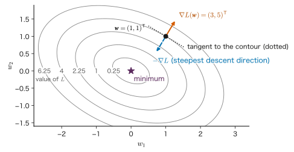
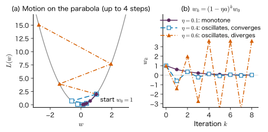
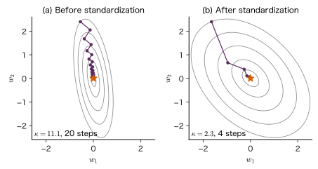
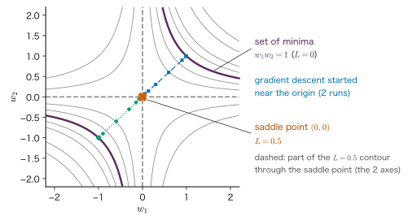
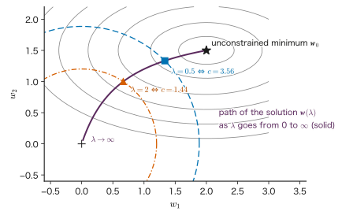
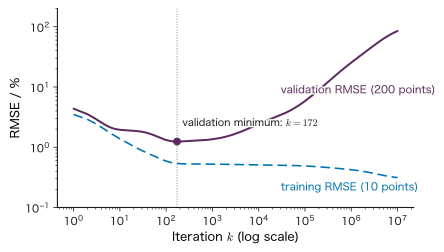

Chapter 7Fundamentals of Optimization — Descending the Valley of the Loss
- Merely raising the learning rate from 0.1 to 0.6 can make the loss keep increasing instead of decreasing. Why does training diverge when the learning rate is made large?
- If we feed the firing temperature (on the order of 1000 °C) and the composition (0–1) directly in as inputs, training makes little progress. What changes when we merely change the scale of the inputs?
- If we can minimize the loss on the training data, is the result a good model?
Imagine someone descending a mountain in the fog, heading for the valley floor. They cannot see far, but they can tell the slope under their feet. So they repeat one move: “step a little in the direction that goes down most steeply.” Most of the learning in machine learning is built from this simple procedure. If we regard the loss function $L(\bm{w})$ as the height of the mountain and the parameters $\bm{w}$ as the position on the map, then the slope under one's feet is the gradient, and the size of a step is the learning rate. However, if the step is too greedy, one jumps across the valley and lands higher up on the opposite slope, and if this is repeated the height keeps increasing. For example, in the simplest valley $L(w)=2w^{2}$, starting from $w=1$, a learning rate of 0.1 brings us down to $w=0.078$ in five steps, whereas a learning rate of 0.6 climbs up to $w=-5.4$ in five steps. This difference is no accident: it is determined by the ratio of the “curvature” of the valley to the step size.
This chapter starts from the loss landscape and the gradient and derives exactly, for a quadratic function, the conditions under which gradient descent converges. Next we treat, in order, how the scaling of the inputs changes the shape of the valley; the fact that for a convex function a local minimum is a global minimum; stochastic gradient descent, which estimates the gradient from part of the data; and its refinements, momentum, RMSProp, and Adam. In the second half we study constrained optimization (Lagrange multipliers and the KKT conditions), the relation between regularization and constraints, and Newton's method and quasi-Newton methods, and finally we confirm that “having optimized well” and “being able to generalize” are different things. In the connection to materials, we see that structural relaxation, which lowers the energy along the forces acting on the atoms, is itself gradient descent.
- Derive from the first-order Taylor expansion that the gradient is the direction in which the function increases most steeply.
- Solve gradient descent for a quadratic function eigenvalue by eigenvalue, and explain the upper limit $2/\lambda_{\max}$ of the learning rate and why the speed of convergence is determined by the condition number.
- Show numerically that standardizing the inputs rounds out the valley of the loss and speeds up learning.
- Distinguish convex functions, local minima, and saddle points, and explain that least squares is convex while neural networks are nonconvex.
- Prove that the minibatch gradient is an unbiased estimate of the gradient over all the data, and that its spread is proportional to $1/\sqrt{B}$.
- Write down the update rules of momentum, RMSProp, and Adam, and say what each is designed to fix.
- Solve small constrained problems by hand with Lagrange multipliers and the KKT conditions. Explain the correspondence between a penalty term and a constraint.
- Derive the step of Newton's method and state how it differs from gradient descent (speed, computational cost, and danger in the nonconvex case).
- Explain that the step size in structural relaxation is limited by the stiffest bond.
Sections for the introductory route: 7.1, 7.2, 7.5, 7.13. Sections marked “Detailed Route” may be skipped on a first reading.
7.1 The Loss Landscape and the Gradient
7.1.1 What we want to do
Through Chapter 6 we have seen that learning means “finding the parameters $\bm{w}$ that make the loss $L(\bm{w})$ on the training data small” (maximum likelihood estimation (MLE) makes the negative log-likelihood small, and least squares makes the squared error small). In some cases, such as linear regression, the answer can be written as a formula (Chapter 8), but for many models, including neural networks, it cannot be solved by a formula, and all we can do is “move $\bm{w}$ a little at a time to lower $L$.” Deciding in which direction and by how much to move is the subject of this chapter.
If $\bm{w}$ has two components, $L(\bm{w})$ can be drawn as a “landscape” over a plane. A curve connecting points of the same height is a contour line (Figure 7.1). The gradient expresses the slope underfoot at each point of the landscape.
7.1.2 Definitions and notation
Notation: Symbols Used in This Chapter
We collect the parameters into a column vector $\bm{w}=(w_1,\dots,w_M)^{\tp}\in\R^{M}$ and write the loss (objective function) as $L(\bm{w})$ (its value is a real scalar). The iteration number is $k=0,1,2,\dots$, and the value at the $k$th iteration is written $\bm{w}_k$ (to distinguish it from the component subscript in $w_i$, the iteration number is attached to the boldface vector). The minimum point is written $\bm{w}^{*}$. The learning rate is $\eta\gt0$ (a scalar). The Hessian matrix (Section 7.2) is written $\bm{H}\in\R^{M\times M}$, and its eigenvalues are written $\lambda_1,\dots,\lambda_M$. An eigenvalue $\lambda_i$ is always written with a subscript or with $\max$ or $\min$, to distinguish it from the unsubscripted $\lambda$ (the regularization coefficient; Section 7.8).
Convention for the loss: in this chapter, the loss on $N$ data points is written as the mean of the per-point losses ($\frac1N\sum_{n}$) (Eq. \eqref{eq:7-avg-loss} in Section 7.5; Chapters 14 and 15 are the same). Chapters 8 and 9 write it as a sum without the $\frac1N$. In either case the minimum point is the same, and the gradient and the Hessian matrix differ only by a factor of $N$ (accordingly, under the sum convention the upper limit $2/\lambda_{\max}$ of the learning rate becomes smaller by a factor of $N$).
Definition 7.1: Gradient
The column vector (an element of $\R^{M}$) formed by arranging the partial derivatives with respect to each component of $L(\bm{w})$
\begin{equation} \begin{aligned} &\nabla L(\bm{w})\\ &=\left(\pdiff{L}{w_1},\ \dots,\ \pdiff{L}{w_M}\right)^{\tp} \end{aligned} \label{eq:7-grad} \end{equation}is called the gradient at $\bm{w}$. The symbol $\nabla$ is read “nabla.” If $L$ is dimensionless and $w_i$ has a unit, the unit of $\partial L/\partial w_i$ is the reciprocal of the unit of $w_i$.
7.1.3 The gradient is the direction of steepest increase
Consider the change in the loss when we move from $\bm{w}$ by a small vector $\bm{\Delta}\in\R^{M}$. By the first-order Taylor expansion of several variables (University Mathematics, Chapter 6, Section 6.6),
\begin{equation} \begin{aligned} L(\bm{w}+\bm{\Delta})={}&L(\bm{w})+\nabla L(\bm{w})^{\tp}\bm{\Delta}\\ &+O(\norm{\bm{\Delta}}^{2}) \end{aligned} \label{eq:7-taylor1} \end{equation}holds. The second term on the right-hand side, $\nabla L^{\tp}\bm{\Delta}=\sum_i(\partial L/\partial w_i)\Delta_i$, is the sum of the effects that the change in each component has on the loss.
Theorem 7.1: Directions of steepest increase and decrease
Suppose $\nabla L(\bm{w})\ne\bm{0}$. Among directions $\bm{u}$ of length 1 ($\norm{\bm{u}}=1$), the one that maximizes the directional derivative $\nabla L(\bm{w})^{\tp}\bm{u}$ is $\bm{u}=\nabla L/\norm{\nabla L}$, and the maximum is $\norm{\nabla L(\bm{w})}$. The one that minimizes it is $\bm{u}=-\nabla L/\norm{\nabla L}$, and the minimum is $-\norm{\nabla L(\bm{w})}$.
Proof
Put $\bm{\Delta}=\epsilon\bm{u}$ in Eq. \eqref{eq:7-taylor1} ($\epsilon\gt0$ is a small number); the change in the loss is then approximated by $\epsilon\,\nabla L^{\tp}\bm{u}$. Let $\theta$ be the angle between the vectors $\bm{g}=\nabla L$ and $\bm{u}$. By the definition of the dot product,
$$ \bm{g}^{\tp}\bm{u}=\norm{\bm{g}}\,\norm{\bm{u}}\cos\theta=\norm{\bm{g}}\cos\theta . $$Since $-1\le\cos\theta\le1$, $\bm{g}^{\tp}\bm{u}$ takes its maximum $\norm{\bm{g}}$ at $\theta=0$ ($\bm{u}$ in the same direction as $\bm{g}$) and its minimum $-\norm{\bm{g}}$ at $\theta=\pi$ (the opposite direction). In the direction $\theta=\pi/2$ the first-order change is 0, and this is the direction of the tangent to the contour line.
∎
Therefore, to lower the loss as fast as possible, we should move in the direction of $-\nabla L$. Also, the gradient is orthogonal to the contour line (Figure 7.1). This is the same as the geometric meaning of the gradient learned in University Mathematics, Chapter 18, Section 18.6.

Math Tool: The gradient of a quadratic form
For a symmetric matrix $\bm{H}\in\R^{M\times M}$ ($H_{ij}=H_{ji}$) and $\bm{b}\in\R^{M}$,
$$ \nabla\Bigl(\tfrac12\bm{w}^{\tp}\bm{H}\bm{w}\Bigr)=\bm{H}\bm{w},\qquad \nabla\bigl(\bm{b}^{\tp}\bm{w}\bigr)=\bm{b} . $$We check this componentwise. Differentiating $\tfrac12\bm{w}^{\tp}\bm{H}\bm{w}=\tfrac12\sum_{i}\sum_{j}H_{ij}w_iw_j$ with respect to $w_k$, the terms with $i=k$ give $\tfrac12\sum_j H_{kj}w_j$, and the terms with $j=k$ give $\tfrac12\sum_i H_{ik}w_i$. Since $H_{ik}=H_{ki}$, the two are equal, and the total is $\sum_j H_{kj}w_j=(\bm{H}\bm{w})_k$.
Example 7.1: The gradient and the direction of steepest descent
Let $L(w_1,w_2)=w_1^{2}+w_1w_2+2w_2^{2}$. (1) Write this in the form $\tfrac12\bm{w}^{\tp}\bm{H}\bm{w}$ and find $\bm{H}$. (2) Find the gradient at $\bm{w}=(1,1)^{\tp}$ and its magnitude. (3) Compare the directional derivative when moving from this point in the positive $w_1$ direction $\bm{u}=(1,0)^{\tp}$ with the directional derivative in the direction of steepest descent. (4) Estimate the change in $L$ when we move a length $\epsilon=0.001$ in the direction of $-\nabla L$, using Eq. \eqref{eq:7-taylor1}.
Solution. (1) Comparing coefficients with $\tfrac12(H_{11}w_1^{2}+2H_{12}w_1w_2+H_{22}w_2^{2})$, we get $H_{11}/2=1$, $H_{12}=1$, $H_{22}/2=2$. Hence $\bm{H}=\begin{pmatrix}2&1\\1&4\end{pmatrix}$ (the matrix of Figure 7.1).
(2) Computing the partial derivatives directly, $\partial L/\partial w_1=2w_1+w_2$ and $\partial L/\partial w_2=w_1+4w_2$. At $(1,1)$ we have $\nabla L=(3,5)^{\tp}$, which agrees with $\bm{H}\bm{w}=(2+1,\ 1+4)^{\tp}$. The magnitude is $\norm{\nabla L}=\sqrt{9+25}=\sqrt{34}\approx5.831$. Also $L(1,1)=1+1+2=4$.
(3) Since $\nabla L^{\tp}\bm{u}=3\times1+5\times0=3$, in the $w_1$ direction the loss increases with slope 3. In the direction of steepest descent $-\nabla L/\norm{\nabla L}$ the slope is $-\sqrt{34}\approx-5.831$.
(4) The change is $\epsilon\,\nabla L^{\tp}\bm{u}=0.001\times(-5.831)=-0.005831$. Computing $L$ exactly gives $-0.005829$, and the difference $0.000002$ is due to the $O(\norm{\bm{\Delta}}^{2})$ term of Eq. \eqref{eq:7-taylor1}.
7.2 Gradient Descent — Step Size and the Curvature of the Valley
7.2.1 The update formula
Definition 7.2: Gradient descent
Start from an initial value $\bm{w}_0\in\R^{M}$, choose a learning rate $\eta\gt0$, and repeat
\begin{equation} \bm{w}_{k+1}=\bm{w}_k-\eta\,\nabla L(\bm{w}_k) \label{eq:7-gd} \end{equation}for $k=0,1,2,\dots$. This method is called gradient descent, or the method of steepest descent. We stop when any one of the following holds: the gradient becomes sufficiently small, the decrease of the loss becomes sufficiently small, or a prescribed number of iterations is reached.
By Section 7.1, $-\nabla L$ is the direction of steepest descent, so if $\eta$ is sufficiently small, then $L(\bm{w}_{k+1})\lt L(\bm{w}_k)$. Indeed, substituting $\bm{\Delta}=-\eta\nabla L$ into Eq. \eqref{eq:7-taylor1} gives $L(\bm{w}_{k+1})\approx L(\bm{w}_k)-\eta\norm{\nabla L}^{2}$. The question is how small “sufficiently small” is. If the step is too large, the first-order approximation breaks down; if it is too small, tens of thousands of iterations are needed. We examine this exactly for the simplest valley.
7.2.2 A hand calculation for a one-dimensional parabola
Let $L(w)=\tfrac12 a w^{2}$ ($a\gt0$; the minimum point is $w^{*}=0$). Here $a=L''(w)$ is the curvature of the valley, and the larger $a$ is, the steeper and narrower the valley is. Since $L'(w)=aw$, Eq. \eqref{eq:7-gd} becomes
\begin{equation} \begin{aligned} w_{k+1}&=w_k-\eta a w_k\\ &=(1-\eta a)\,w_k \end{aligned} \label{eq:7-gd1d} \end{equation}Repeating this $k$ times gives $w_k=(1-\eta a)^{k}w_0$. We have $w_k\to0$ as $k\to\infty$ exactly when $\abs{1-\eta a}\lt1$, that is, when $-1\lt1-\eta a\lt1$, and solving this for $\eta$ gives
\begin{equation} 0\lt\eta\lt\frac{2}{a} \label{eq:7-eta1d} \end{equation}For $\eta\gt2/a$ we have $\abs{1-\eta a}\gt1$, so $\abs{w_k}$ grows exponentially (divergence). Looking more closely, there are four cases (Figure 7.2).
- $0\lt\eta\lt1/a$: $0\lt1-\eta a\lt1$. The iterate approaches 0 monotonically without changing sign.
- $\eta=1/a$: $1-\eta a=0$. The minimum point is reached in one step (this holds only for a quadratic function).
- $1/a\lt\eta\lt2/a$: $-1\lt1-\eta a\lt0$. The iterate jumps across the valley every time, changing sign, while approaching 0.
- $\eta\gt2/a$: $1-\eta a\lt-1$. Each time the iterate jumps across the valley, it lands higher on the opposite side, and it diverges.
Example 7.2: Three learning rates
Let $L(w)=\tfrac12\cdot4\,w^{2}=2w^{2}$ and $w_0=1$. For each of $\eta=0.1,\ 0.4,\ 0.6$, find $w_1,\dots,w_5$, and compare whether the iteration converges with Eq. \eqref{eq:7-eta1d}. What happens for $\eta=0.25$?
Solution. Since $a=4$, we have $2/a=0.5$ and $1/a=0.25$. We compute the coefficient $1-\eta a$ and multiply repeatedly.
- $\eta=0.1$: $1-0.4=0.6$. Since $w_k=0.6^{k}$, the values $w_1$ through $w_5$ are $0.6$, $0.36$, $0.216$, $0.1296$, $0.0778$, in this order. The iteration converges monotonically ($\eta\lt1/a$).
- $\eta=0.4$: $1-1.6=-0.6$. The values $w_1$ through $w_5$ are $-0.6$, $0.36$, $-0.216$, $0.1296$, $-0.0778$, in this order. The iteration converges while changing sign ($1/a\lt\eta\lt2/a$). $\abs{w_k}$ is the same as for $\eta=0.1$.
- $\eta=0.6$: $1-2.4=-1.4$. The values $w_1$ through $w_5$ are $-1.4$, $1.96$, $-2.744$, $3.842$, $-5.378$, in this order. The iteration diverges ($\eta\gt2/a$). The loss $2w_k^{2}$ goes $2$, $3.92$, $7.68$, $15.1$, $29.5$, $57.9$, multiplying by $1.96$ each time.
- $\eta=0.25$: $1-1=0$. We get $w_1=0$, so the minimum point is reached in one step.

7.2.3 A multidimensional quadratic function — separating by eigenvalue
Near the minimum point, many smooth loss functions can be approximated by a quadratic function (Eq. \eqref{eq:7-taylor2} in Section 7.4). So we study
\begin{equation} \begin{aligned} L(\bm{w})={}&\tfrac12(\bm{w}-\bm{w}^{*})^{\tp}\bm{H}(\bm{w}-\bm{w}^{*})\\ &+L^{*} \end{aligned} \label{eq:7-quad} \end{equation}Here $\bm{H}\in\R^{M\times M}$ is symmetric and positive definite (all eigenvalues are positive), and $L^{*}$ is the minimum (a constant). The matrix $\bm{H}$ is the matrix of second partial derivatives of $L$, $H_{ij}=\partial^{2}L/\partial w_i\partial w_j$, and is called the Hessian matrix. By the “Math Tool” of Section 7.1, $\nabla L=\bm{H}(\bm{w}-\bm{w}^{*})$, so for the deviation from the minimum point, $\bm{e}_k\equiv\bm{w}_k-\bm{w}^{*}$, Eq. \eqref{eq:7-gd} becomes
\begin{equation} \begin{aligned} \bm{e}_{k+1}&=\bm{e}_k-\eta\bm{H}\bm{e}_k\\ &=(\bm{I}-\eta\bm{H})\,\bm{e}_k \end{aligned} \label{eq:7-gdquad} \end{equation}where $\bm{I}$ is the $M\times M$ identity matrix.
Leaving it in matrix form makes the structure hard to see, so we move to coordinates along the eigenvectors of $\bm{H}$. The symmetric matrix $\bm{H}$ has mutually orthogonal eigenvectors $\bm{q}_1,\dots,\bm{q}_M$ of length 1 ($\bm{H}\bm{q}_i=\lambda_i\bm{q}_i$) (Section A.3 of Appendix A). Expand the deviation as $\bm{e}_k=\sum_i c_{i,k}\,\bm{q}_i$ (here $c_{i,k}=\bm{q}_i^{\tp}\bm{e}_k$ is the component along the $i$th eigenvector). The right-hand side of Eq. \eqref{eq:7-gdquad} becomes
$$ \begin{aligned} (\bm{I}-\eta\bm{H})\sum_i c_{i,k}\bm{q}_i &=\sum_i c_{i,k}\bigl(\bm{q}_i-\eta\bm{H}\bm{q}_i\bigr)\\ &=\sum_i c_{i,k}\bigl(1-\eta\lambda_i\bigr)\bm{q}_i \end{aligned} $$Comparing the coefficients of $\bm{q}_i$ on both sides, we obtain
\begin{equation} \begin{aligned} c_{i,k+1}&=(1-\eta\lambda_i)\,c_{i,k},\\ c_{i,k}&=(1-\eta\lambda_i)^{k}c_{i,0} \end{aligned} \label{eq:7-modes} \end{equation}In other words, gradient descent in $M$ dimensions splits into independent one-dimensional problems (Eq. \eqref{eq:7-gd1d} with $a=\lambda_i$), one for each eigenvector direction. For convergence in all directions, we need $0\lt\eta\lt2/\lambda_i$ for every $i$. The most severe condition comes from the largest eigenvalue $\lambda_{\max}$, so
is the condition for convergence. This is the answer to the question posed at the start: when the learning rate is increased, the iteration diverges because the amount by which it jumps across the valley in the steepest direction (the direction of largest curvature) grows with every step.
7.2.4 The speed of convergence is determined by the condition number
Even if we choose $\eta$ in the range \eqref{eq:7-etamax}, in a flat direction (small $\lambda_i$) the factor $1-\eta\lambda_i$ is close to 1, and the deviation shrinks only slowly. The overall rate of shrinking is determined by the largest absolute value of the coefficients over all directions, $\rho(\eta)=\max_i\abs{1-\eta\lambda_i}$. Since $\abs{1-\eta\lambda_i}$ is the absolute value of a linear function of $\lambda_i$, its maximum is attained at one of the two ends, $\lambda_{\min}$ or $\lambda_{\max}$. As $\eta$ is increased, $\abs{1-\eta\lambda_{\min}}=1-\eta\lambda_{\min}$ decreases, while $\abs{1-\eta\lambda_{\max}}$ increases (for $\eta\gt1/\lambda_{\max}$). At the point where the two become equal,
$$ \begin{aligned} &1-\eta\lambda_{\min}=\eta\lambda_{\max}-1\\ &\Longrightarrow\quad \eta_{\mathrm{opt}}=\frac{2}{\lambda_{\max}+\lambda_{\min}} \end{aligned} $$$\rho$ is smallest (Exercise 7.2), and its value is
\begin{equation} \begin{aligned} \rho_{\mathrm{opt}}&=1-\frac{2\lambda_{\min}}{\lambda_{\max}+\lambda_{\min}}\\ &=\frac{\kappa-1}{\kappa+1},\quad \kappa\equiv\frac{\lambda_{\max}}{\lambda_{\min}} \end{aligned} \label{eq:7-rate} \end{equation}We call $\kappa\ge1$ the condition number of $\bm{H}$. If $\kappa=1$ (the contour lines are circles), then $\rho=0$ and the minimum is reached in one step. If $\kappa$ is large (a long, narrow valley), $\rho$ is close to 1. The number of iterations $\ln\epsilon/\ln\rho$ needed to shrink the deviation by a factor of $\epsilon$ is, for $\kappa\gg1$, since $\ln\rho\approx-2/\kappa$, about $\tfrac{\kappa}{2}\ln(1/\epsilon)$, which increases in proportion to the condition number.
Example 7.3: Upper limit of the learning rate in a two-dimensional valley
Apply gradient descent to the quadratic function \eqref{eq:7-quad} with $\bm{H}=\diag(10,1)$ (the diagonal matrix with diagonal entries 10 and 1). (1) Find the range of $\eta$ for which the iteration converges. (2) For each of $\eta=0.05,\ 0.15,\ 0.21$, find the coefficients $1-\eta\lambda_i$ for the two directions and $\rho$. (3) Find the optimal constant learning rate and the corresponding $\rho$, and estimate how many iterations are needed to reduce the error by a factor of $10^{-3}$.
Solution. The eigenvalues of a diagonal matrix are its diagonal entries, so $\lambda_{\max}=10$, $\lambda_{\min}=1$, and $\kappa=10$.
(1) By Eq. \eqref{eq:7-etamax}, $0\lt\eta\lt2/10=0.2$.
(2) For $\eta=0.05$: $(1-0.5,\ 1-0.05)=(0.5,\ 0.95)$, so $\rho=0.95$. For $\eta=0.15$: $(-0.5,\ 0.85)$, so $\rho=0.85$. For $\eta=0.21$: $(-1.1,\ 0.79)$, so $\rho=1.1\gt1$, and only the direction with $\lambda=10$ diverges. The coefficient 0.79 for the gentle direction is the smallest of the three, yet because of the steep direction the iteration as a whole diverges.
(3) $\eta_{\mathrm{opt}}=2/(10+1)=0.1818$ and $\rho_{\mathrm{opt}}=(10-1)/(10+1)=9/11\approx0.818$. Solving $0.818^{k}=10^{-3}$ gives $k=\ln10^{-3}/\ln(9/11)\approx34.4$, so 35 iterations.
7.3 Scaling and Standardization — Rounding Out an Elongated ValleyDetailed Route
7.3.1 When inputs differ in order of magnitude, the valley becomes elongated
Suppose we train a linear model $f(\bm{x};\bm{w})=\bm{w}^{\tp}\bm{\phi}(\bm{x})$ with the mean squared error
$$ L(\bm{w})=\frac{1}{2N}\sum_{n=1}^{N}\bigl(y_n-\bm{w}^{\tp}\bm{\phi}_n\bigr)^{2} $$Here $\bm{\phi}_n\equiv\bm{\phi}(\bm{x}_n)\in\R^{M}$ (Chapter 8 uses the form of a sum without the factor $1/N$. Either way the minimum is the same, and the Hessian matrix differs only by a factor of $N$). Differentiating twice with respect to $w_i$ and $w_j$ and using the design matrix $\bm{\Phi}\in\R^{N\times M}$ (whose $n$th row is $\bm{\phi}_n^{\tp}$), we obtain
\begin{equation} \begin{aligned} \bm{H}&=\frac{1}{N}\sum_{n=1}^{N}\bm{\phi}_n\bm{\phi}_n^{\tp}\\ &=\frac1N\bm{\Phi}^{\tp}\bm{\Phi}\in\R^{M\times M} \end{aligned} \label{eq:7-hess-ls} \end{equation}(in components, $H_{ij}=\frac1N\sum_n\phi_{ni}\phi_{nj}$. Since this is a constant matrix independent of $w$, this loss has exactly the form of Eq. \eqref{eq:7-quad}). Here $H_{ii}$ is the mean of the square of the $i$th feature. If we use the firing temperature $T$ (°C) as a feature as it is, the mean of $T^{2}$ is about $10^{6}$, whereas for the composition $x\in[0,1]$ the mean of $x^{2}$ is about $0.1$, so the diagonal entries alone differ by seven orders of magnitude. This means an extremely elongated valley, with $\kappa$ of about $10^{7}$ or more.
Definition 7.3: Standardization
Using the mean $m_j=\frac1N\sum_n\phi_{nj}$ and the standard deviation $s_j=\sqrt{\frac1N\sum_n(\phi_{nj}-m_j)^{2}}$ of the feature $\phi_j$ over the training data, the transformation
\begin{equation} z_{nj}=\frac{\phi_{nj}-m_j}{s_j} \label{eq:7-std} \end{equation}is called standardization. After the transformation, the feature has mean 0 and standard deviation 1, and is dimensionless. A constant feature (the intercept $\phi_0=1$) is not standardized. Compute $m_j$ and $s_j$ from the training data only, and use the same values for the validation and test data (to avoid data leakage; Chapter 6, Section 6.7).
After standardization, the intercept column $\bm{1}$ is orthogonal to the standardized columns (because $\sum_n z_{nj}=0$). Moreover, $\frac1N\sum_n z_{nj}^{2}=1$ and $\frac1N\sum_n z_{ni}z_{nj}=r_{ij}$ (the correlation coefficient of features $i$ and $j$), so $\bm{H}$ in Eq. \eqref{eq:7-hess-ls} becomes
$$ \bm{H}_{\mathrm{std}}=\begin{pmatrix}1&\bm{0}^{\tp}\\ \bm{0}&\bm{C}\end{pmatrix},\qquad C_{ij}=r_{ij} $$(where $\bm{C}$ is the correlation matrix). All diagonal entries are equal to 1, and the condition number is determined solely by the correlations among the features. For two features, the eigenvalues of $\bm{C}=\begin{pmatrix}1&r\\r&1\end{pmatrix}$ are $1\pm r$, so the eigenvalues of the whole matrix are $1,\ 1+\abs{r},\ 1-\abs{r}$ and
$$ \kappa_{\mathrm{std}}=\frac{1+\abs{r}}{1-\abs{r}} $$If the correlation is strong ($\abs{r}\to1$), the valley remains elongated even after standardization; this is a problem of multicollinearity (Chapter 8).

Example 7.4: Using the firing temperature and composition as they are
Take as inputs the four pairs of firing temperature $T$ and composition $x$, $(T,x)=(1100\ ^{\circ}\mathrm{C},0.2)$, $(1200,0.8)$, $(1300,0.4)$, $(1400,0.6)$, and train a linear regression with features $\bm{\phi}=(1,T,x)^{\tp}$ using the mean squared error (a numerical example for teaching purposes). (1) Find $\bm{H}$ in Eq. \eqref{eq:7-hess-ls}. (2) Find the mean, standard deviation, and correlation coefficient of $T$ and $x$, and then find $\bm{H}$ and the condition number after standardization. (3) The eigenvalues of $\bm{H}$ before standardization are $7.50\times10^{-3}$, $4.44\times10^{-2}$, and $1.575\times10^{6}$. Find the condition number and the upper limit of the learning rate, and compare the numbers of iterations required before and after standardization.
Solution. (1) Take the mean over the four points for each entry. $\overline{1}=1$, $\overline{T}=(1100+1200+1300+1400)/4$ $=1250$, $\overline{x}=(0.2+0.8+0.4+0.6)/4=0.5$, $\overline{T^{2}}=(1.21+1.44+1.69+1.96)\times10^{6}/4$ $=1.575\times10^{6}$, $\overline{Tx}=(220+960+520+840)/4=635$, $\overline{x^{2}}=(0.04+0.64+0.16+0.36)/4=0.30$. Hence
$$ \bm{H}=\begin{pmatrix}1&1250&0.5\\1250&1.575\times10^{6}&635\\0.5&635&0.30\end{pmatrix}. $$(2) $m_T=1250$, $s_T^{2}=\overline{T^{2}}-m_T^{2}$ $=1.575\times10^{6}-1.5625\times10^{6}$ $=12500$, $s_T=111.8$. $m_x=0.5$, $s_x^{2}=0.30-0.25=0.05$, $s_x=0.2236$. The covariance is $\overline{Tx}-m_Tm_x=635-625=10$, so $r=10/(111.8\times0.2236)=10/25=0.4$. After standardization, $\bm{H}$ is
$$ \bm{H}_{\mathrm{std}}=\begin{pmatrix}1&0&0\\0&1&0.4\\0&0.4&1\end{pmatrix}, $$whose eigenvalues are $1,\ 1.4,\ 0.6$, so $\kappa_{\mathrm{std}}=1.4/0.6=7/3\approx2.33$.
(3) Before standardization, $\kappa=1.575\times10^{6}/7.50\times10^{-3}\approx2.1\times10^{8}$, and the upper limit of the learning rate is $2/\lambda_{\max}=2/(1.575\times10^{6})\approx1.27\times10^{-6}$. Even with the optimal constant learning rate, $\rho=(\kappa-1)/(\kappa+1)$, and reducing the error by a factor of $10^{-6}$ takes $\ln10^{-6}/\ln\rho\approx1.4\times10^{9}$ iterations. After standardization, $\rho=(7/3-1)/(7/3+1)=0.4$, so $\ln10^{-6}/\ln0.4\approx15.1$, and 16 iterations suffice. Although the models give the same predictions, the number of iterations changes by eight orders of magnitude merely through the choice of the scale of the inputs.
Notation: Subtracting the mean alone, or dividing alone, is not enough
If we only center $T$ and $x$ of Example 7.4 (subtract the mean), the eigenvalues are $0.042,\ 1,\ 1.25\times10^{4}$ and $\kappa\approx3\times10^{5}$ remains. If we only change the unit to $T/1000$ (units of 1000 °C), $\kappa\approx640$. Only standardization, which does both, gives $\kappa=2.33$. With any of these methods, the prediction at the minimum does not change (the values of $w_j$ are merely converted). What changes is how easily gradient descent makes progress.
7.4 Convex Functions, Local Minima, and Saddle PointsDetailed Route
7.4.1 Convex functions
Definition 7.4: Convex function
A function $L:\R^{M}\to\R$ is called a convex function if, for any $\bm{u},\bm{v}\in\R^{M}$ and $0\le t\le1$,
\begin{equation} \begin{aligned} &L\bigl(t\bm{u}+(1-t)\bm{v}\bigr)\\ &\quad\le t\,L(\bm{u})+(1-t)\,L(\bm{v}) \end{aligned} \label{eq:7-convex} \end{equation}holds. If the strict inequality always holds for $0\lt t\lt1$ and $\bm{u}\ne\bm{v}$, it is called strictly convex.
The left-hand side of Eq. \eqref{eq:7-convex} is the value of the function on the line segment joining the two points, and the right-hand side is the height of the chord joining the function values at the two points. “The graph never rises above the chord” is what convex means (Figure 7.4(a)). For a twice-differentiable function, the following criterion can be used.
Theorem 7.2: Criterion for convexity by the Hessian matrix
When $L$ is twice continuously differentiable, $L$ is convex if and only if the Hessian matrix $\bm{H}(\bm{w})$ is positive semidefinite (that is, $\bm{v}^{\tp}\bm{H}\bm{v}\ge0$ for every $\bm{v}$) at every $\bm{w}$. If it is positive definite at every $\bm{w}$, the function is strictly convex.
For one variable, this corresponds to the high school mathematics result “if $L''(w)\ge0$, the function is convex” (the graph is convex downward). The proof is in Chapter 3 of the textbook by Boyd and Vandenberghe (see References). In this book we use it only as a criterion.
Theorem 7.3: For a convex function, a local minimum is a global minimum
If $L$ is convex and $\bm{w}^{*}$ is a local minimum (that is, $L(\bm{w}^{*})\le L(\bm{w})$ within some neighborhood), then $\bm{w}^{*}$ is a global minimum. Moreover, if $L$ is differentiable, every point satisfying $\nabla L(\bm{w}^{*})=\bm{0}$ is a global minimum.
Proof
We prove the first half by contradiction. Suppose there is a $\bm{v}$ with $L(\bm{v})\lt L(\bm{w}^{*})$. For $0\lt t\lt1$, let $\bm{w}_t=t\bm{v}+(1-t)\bm{w}^{*}$. By Eq. \eqref{eq:7-convex},
$$ \begin{aligned} L(\bm{w}_t)&\le t\,L(\bm{v})+(1-t)\,L(\bm{w}^{*})\\ &\lt t\,L(\bm{w}^{*})+(1-t)\,L(\bm{w}^{*})=L(\bm{w}^{*}). \end{aligned} $$As $t\to0$, $\bm{w}_t$ comes arbitrarily close to $\bm{w}^{*}$, so every neighborhood of $\bm{w}^{*}$ contains a point where $L$ is smaller. This contradicts the assumption that $\bm{w}^{*}$ is a local minimum.
Second half: for a convex differentiable $L$, rearranging Eq. \eqref{eq:7-convex} in terms of $t$ and letting $t\to0$ gives $L(\bm{v})\ge L(\bm{w})+\nabla L(\bm{w})^{\tp}(\bm{v}-\bm{w})$ (the graph lies above the tangent plane). Concretely, read $\bm{u}\to\bm{v}$ and $\bm{v}\to\bm{w}$ in Eq. \eqref{eq:7-convex}, subtract $L(\bm{w})$ from both sides, and divide by $t$; this gives $\{L(\bm{w}+t(\bm{v}-\bm{w}))-L(\bm{w})\}/t\le L(\bm{v})-L(\bm{w})$, and as $t\to0$ the left-hand side becomes the directional derivative $\nabla L(\bm{w})^{\tp}(\bm{v}-\bm{w})$. Substituting $\nabla L(\bm{w}^{*})=\bm{0}$, we get $L(\bm{v})\ge L(\bm{w}^{*})$ for every $\bm{v}$.
∎
7.4.2 Are machine learning losses convex?
- Least squares: $\bm{H}=\frac1N\bm{\Phi}^{\tp}\bm{\Phi}$ in Eq. \eqref{eq:7-hess-ls} is positive semidefinite, because $\bm{v}^{\tp}\bm{H}\bm{v}=\frac1N\norm{\bm{\Phi}\bm{v}}^{2}\ge0$ for every $\bm{v}$. Hence it is convex (Theorem 7.2). If we add the ridge penalty $\tfrac{\lambda}{2}\norm{\bm{w}}^{2}$ ($\lambda\gt0$), the Hessian matrix becomes $\bm{H}+\lambda\bm{I}$, which is positive definite, so the loss is strictly convex (there is exactly one minimum).
- Logistic regression: the Hessian matrix of the cross-entropy loss (with the sum convention of Chapter 9) is $\sum_n\hat{y}_n(1-\hat{y}_n)\bm{\phi}_n\bm{\phi}_n^{\tp}$, which is positive semidefinite, so the loss is convex (for the derivation, see Chapter 9, Section 9.3).
- Neural networks: with hidden layers, the loss is in general not convex. For example, permuting the indices of the hidden units gives the same function (Chapter 14, Section 14.8), so there are several minimum points with the same loss at distant places. For a convex function, the set of minima must be a convex set (containing the line segment joining any two of its points), but in general the loss rises along the middle of such a segment.
7.4.3 Classifying stationary points, and saddle points
A point $\bm{w}_{\mathrm{s}}$ satisfying $\nabla L(\bm{w}_{\mathrm{s}})=\bm{0}$ is called a stationary point. Gradient descent stops at a stationary point (the update becomes 0), but a stationary point is not necessarily a minimum. Taking the second-order Taylor expansion around a stationary point, the first-order term vanishes and
\begin{equation} \begin{aligned} &L(\bm{w}_{\mathrm{s}}+\bm{\Delta})\\ &\approx L(\bm{w}_{\mathrm{s}})+\frac12\bm{\Delta}^{\tp}\bm{H}(\bm{w}_{\mathrm{s}})\,\bm{\Delta} \end{aligned} \label{eq:7-taylor2} \end{equation}follows. Expanding $\bm{\Delta}$ in the eigenvectors of $\bm{H}$ gives $\tfrac12\bm{\Delta}^{\tp}\bm{H}\bm{\Delta}=\tfrac12\sum_i\lambda_i c_i^{2}$, so
- if all $\lambda_i\gt0$: the loss rises in every direction of movement → a local minimum.
- if all $\lambda_i\lt0$: the loss falls in every direction of movement → a local maximum.
- if positive and negative $\lambda_i$ are mixed: the loss rises in some directions and falls in others → a saddle point (named for the shape of a horse saddle).
- if some eigenvalue is 0: the second-order term alone cannot decide (there is a flat direction).
This is the $M$-dimensional version of “determining extrema by the sign of a quadratic form” in University Mathematics, Section 6.6.
Example 7.5: The loss of the smallest “two-layer” model
For the input $x=1$, we want to represent the target value $y=1$ by the product of two weights, $f=w_2w_1x$ (this corresponds to a network with one hidden unit whose activation is the identity map). Let the loss be $L(w_1,w_2)=\tfrac12(w_1w_2-1)^{2}$. (1) Find the gradient and the Hessian matrix. (2) Is the origin $(0,0)$ a stationary point? If so, of which kind? (3) Find the eigenvalues of the Hessian matrix at $(1,1)$ and $(2,0.5)$. (4) Show, using the definition \eqref{eq:7-convex}, that $L$ is not convex.
Solution. (1) Let $u=w_1w_2-1$. Then $L=\tfrac12u^{2}$, and by the chain rule $\partial L/\partial w_1=u\,w_2$ and $\partial L/\partial w_2=u\,w_1$. Differentiating once more,
$$ \begin{aligned} &\frac{\partial^{2}L}{\partial w_1^{2}}=w_2^{2},\qquad \frac{\partial^{2}L}{\partial w_2^{2}}=w_1^{2},\\ &\frac{\partial^{2}L}{\partial w_1\partial w_2}=w_2\,w_1+u=2w_1w_2-1 . \end{aligned} $$(2) At the origin $u=-1$, and the gradient $(u\,w_2,\ u\,w_1)=(0,0)$, so it is a stationary point. The eigenvalues of $\bm{H}(0,0)=\begin{pmatrix}0&-1\\-1&0\end{pmatrix}$ satisfy $\det(\bm{H}-\lambda\bm{I})=\lambda^{2}-1=0$, so $\lambda=\pm1$. Since positive and negative eigenvalues are mixed, it is a saddle point. Moving in the direction of the eigenvector $(1,1)^{\tp}/\sqrt2$ ($\lambda=-1$), $w_1w_2\gt0$ grows and the loss decreases, whereas in the direction of $(1,-1)^{\tp}/\sqrt2$ ($\lambda=+1$), $w_1w_2\lt0$ and the loss increases.
(3) At $(1,1)$: $u=0$, $\bm{H}=\begin{pmatrix}1&1\\1&1\end{pmatrix}$, and the eigenvalues are $0$ and $2$. At $(2,0.5)$: $\bm{H}=\begin{pmatrix}0.25&1\\1&4\end{pmatrix}$, and from $\det=0.25\times4-1=0$ and $\tr=4.25$ the eigenvalues are $0$ and $4.25$. Both are minima ($L=0$) but have the eigenvalue 0. This is because the minima line up along the hyperbola $w_1w_2=1$, and the loss does not change in that direction (Figure 7.5).
(4) $\bm{u}=(1,1)$ and $\bm{v}=(-1,-1)$ both have $L=0$. The midpoint for $t=1/2$ is the origin, where $L=0.5$. The right-hand side of Eq. \eqref{eq:7-convex} is $\tfrac12\times0+\tfrac12\times0=0$, so $0.5\le0$ fails to hold, and $L$ is not convex.

Why are saddle points a problem?
Near a saddle point the gradient is small, so each step of gradient descent is also small, and progress is slow. If we start exactly on a saddle point (the origin in Example 7.5), the gradient is exactly 0 and we do not move at all. This is one of the reasons why we must not start all the weights of a neural network from 0 (initialization is treated in Chapter 15, Section 15.6). On the other hand, the variability contained in the minibatch gradient (Section 7.5) can also provide a way to escape from a saddle point.
7.5 Stochastic Gradient Descent and Minibatches
7.5.1 The gradient over all the data is expensive
In machine learning, the loss is in many cases the mean of the per-data-point losses $\ell_n(\bm{w})$ (the loss for the $n$th data point $(\bm{x}_n,y_n)$).
\begin{equation} \begin{aligned} L(\bm{w})&=\frac1N\sum_{n=1}^{N}\ell_n(\bm{w}),\\ \nabla L(\bm{w})&=\frac1N\sum_{n=1}^{N}\nabla\ell_n(\bm{w}) \end{aligned} \label{eq:7-avg-loss} \end{equation}For example, for the squared error we have $\ell_n=\tfrac12(f(\bm{x}_n;\bm{w})-y_n)^{2}$. One step of gradient descent requires the gradients of all $N$ points. When $N$ is in the tens of thousands to hundreds of millions, reading all the data at every step is far too slow. So each time we estimate the gradient from only a part of the data.
Definition 7.5: Minibatch and stochastic gradient descent
A set $\mathcal{B}$ of $B$ indices chosen from the data indices is called a minibatch (of size $B$), and
\begin{equation} \bm{g}_{\mathcal{B}}(\bm{w})=\frac1B\sum_{n\in\mathcal{B}}\nabla\ell_n(\bm{w}) \label{eq:7-mb} \end{equation}is called the minibatch gradient. The method that chooses a new minibatch each time and updates
\begin{equation} \bm{w}_{k+1}=\bm{w}_k-\eta_k\,\bm{g}_{\mathcal{B}_k}(\bm{w}_k) \label{eq:7-sgd} \end{equation}is called stochastic gradient descent (SGD). The case $B=1$ is sometimes called SGD in the narrow sense, and $1\lt B\lt N$ minibatch SGD. If $B=N$, this is just gradient descent itself. The learning rate $\eta_k$ may change with the iteration.
In practice, the order of the data is permuted at random (shuffling), and $B$ points at a time are taken from the front and used for an update. The period until every data point has been used once is called one epoch. The number of updates in one epoch is about $N/B$. The data are reshuffled at every epoch.
7.5.2 The minibatch gradient is unbiased, and its spread is $1/\sqrt{B}$
The minibatch gradient differs from the gradient over all the data, but we show that it is “correct on average.” Here we consider sampling with replacement, which is easy to analyze (the $B$ indices $i_1,\dots,i_B$ are each chosen independently from $\{1,\dots,N\}$ with equal probability; the same index may appear more than once). We fix $\bm{w}$; the only random element is the choice of indices.
Theorem 7.4: Expectation and variance of the minibatch gradient
Let the mean of the squared deviations of the one-point gradients from their mean (the magnitude of the spread) be
$$ s^{2}\equiv\frac1N\sum_{n=1}^{N}\norm{\nabla\ell_n(\bm{w})-\nabla L(\bm{w})}^{2} $$For the minibatch gradient \eqref{eq:7-mb} with sampling with replacement,
\begin{equation} \Ex\bigl[\bm{g}_{\mathcal{B}}\bigr]=\nabla L(\bm{w}) \label{eq:7-unbiased} \end{equation} \begin{equation} \Ex\Bigl[\norm{\bm{g}_{\mathcal{B}}-\nabla L(\bm{w})}^{2}\Bigr]=\frac{s^{2}}{B} \label{eq:7-mbvar} \end{equation}hold. The expectation (expected value) is taken over the choice of indices.
Proof
To shorten the notation, let $\bm{d}_n\equiv\nabla\ell_n(\bm{w})-\nabla L(\bm{w})$. By Eq. \eqref{eq:7-avg-loss}, $\frac1N\sum_n\bm{d}_n=\bm{0}$. Since the $b$th chosen index $i_b$ follows the uniform distribution on $\{1,\dots,N\}$,
$$ \begin{aligned} \Ex\bigl[\bm{d}_{i_b}\bigr]&=\sum_{n=1}^{N}\frac1N\,\bm{d}_n=\bm{0},\\ \Ex\bigl[\norm{\bm{d}_{i_b}}^{2}\bigr]&=\frac1N\sum_{n=1}^{N}\norm{\bm{d}_n}^{2}=s^{2}. \end{aligned} $$Expectation: We have $\bm{g}_{\mathcal{B}}-\nabla L=\frac1B\sum_{b=1}^{B}\bm{d}_{i_b}$ (we used the fact that adding $\nabla L$ a total of $B$ times and dividing by $B$ returns $\nabla L$). By the linearity of expectation (Chapter 2, Section 2.5), $\Ex[\bm{g}_{\mathcal{B}}-\nabla L]=\frac1B\sum_b\Ex[\bm{d}_{i_b}]=\bm{0}$. This is Eq. \eqref{eq:7-unbiased}.
Variance: We expand the squared norm using the dot product.
$$ \begin{aligned} \norm{\textstyle\frac1B\sum_{b}\bm{d}_{i_b}}^{2} &=\frac1{B^{2}}\sum_{b=1}^{B}\sum_{b'=1}^{B}\bm{d}_{i_b}^{\tp}\bm{d}_{i_{b'}}\\ &=\frac1{B^{2}}\Bigl(\sum_{b}\norm{\bm{d}_{i_b}}^{2}+\sum_{b\ne b'}\bm{d}_{i_b}^{\tp}\bm{d}_{i_{b'}}\Bigr). \end{aligned} $$For $b\ne b'$, $i_b$ and $i_{b'}$ are independent, so $\Ex[\bm{d}_{i_b}^{\tp}\bm{d}_{i_{b'}}]=\Ex[\bm{d}_{i_b}]^{\tp}\Ex[\bm{d}_{i_{b'}}]=0$. The expectation of the remaining first term is $B\,s^{2}$, so the whole is $B\,s^{2}/B^{2}=s^{2}/B$.
∎
Taking the square root of Eq. \eqref{eq:7-mbvar}, the magnitude of the deviation of the minibatch gradient (the square root of the mean square, RMS) is $s/\sqrt{B}$. This has the same structure as “the variance of the sample mean is $\sigma^{2}/N$” in Chapter 2, Section 2.8. To halve the spread, one must increase $B$ by a factor of 4 (Figure 7.6(b)).
Notation: Sampling without replacement (when shuffling and taking in order)
The commonly used “permute, then take $B$ at a time” is sampling without replacement, which never repeats the same index. In this case, too, a single minibatch considered alone is unbiased, and its variance becomes slightly smaller, $\dfrac{s^{2}}{B}\cdot\dfrac{N-B}{N-1}$ (it is 0 when $B=N$: if all the data are used, there is no spread). For $B\ll N$ it is almost the same as $s^{2}/B$.
Example 7.6: Enumerating the minibatch gradients for four data points
Fit a line through the origin, $f=wx$, to the four points $(x_n,y_n)=(1,1),(2,3),(3,2),(4,5)$ of a one-dimensional input $x$ and target value $y$. Let the loss of one point be $\ell_n=\tfrac12(wx_n-y_n)^{2}$, and take $w=1$. (1) Find the gradient $\ell_n'(w)$ of each point and the gradient $L'(w)$ over all the data. (2) For all six ways of choosing a minibatch of size $B=2$ without replacement, find the minibatch gradient, and verify that its mean equals $L'(w)$. (3) Find the variance over the six ways and compare it with the formula in the “Notation” box above.
Solution. (1) $\ell_n'(w)=(wx_n-y_n)x_n$. At $w=1$ these are $(1-1)\cdot1=0$, $(2-3)\cdot2=-2$, $(3-2)\cdot3=3$, $(4-5)\cdot4=-4$. The gradient over all the data is their mean, $L'(1)=(0-2+3-4)/4=-0.75$. Since it is negative, increasing $w$ lowers the loss (the least-squares solution is $w^{*}=\sum x_ny_n/\sum x_n^{2}=33/30=1.1$).
(2) The pair $\{1,2\}$: $(0-2)/2=-1$. $\{1,3\}$: $1.5$. $\{1,4\}$: $-2$. $\{2,3\}$: $0.5$. $\{2,4\}$: $-3$. $\{3,4\}$: $-0.5$. The sum over the six ways is $-4.5$, so the mean is $-4.5/6=-0.75$, which equals $L'(1)$. For $\{1,3\}$ and $\{2,3\}$ the sign of the gradient is opposite, and updating with these minibatches moves in the direction that raises the loss. Even so, on average we move in the correct direction.
(3) The squared deviations of the six values from their mean $-0.75$ are, in order, $0.0625$, $5.0625$, $1.5625$, $1.5625$, $5.0625$, $0.0625$, and their mean is $13.375/6\approx2.229$. On the other hand, the deviations from the mean, $\ell_n'-L'$, are $0.75$, $-1.25$, $3.75$, $-3.25$, so $s^{2}=26.75/4=6.6875$, and $\dfrac{s^{2}}{B}\cdot\dfrac{N-B}{N-1}=\dfrac{6.6875}{2}\cdot\dfrac{2}{3}\approx2.229$. They agree.
7.5.3 Learning-rate decay
If we continue SGD with a constant learning rate $\eta$, then even after reaching the neighborhood of the minimum, $\bm{w}$ keeps wandering around the minimum because of the spread of the minibatch gradient (Eq. \eqref{eq:7-mbvar}). This is because, even though $\nabla L=\bm{0}$ at the minimum, the gradient of each minibatch is not zero. The width of the wandering is roughly proportional to “$\eta\times$ the spread of the gradient.” So we make $\eta_k$ smaller as the iterations proceed (learning-rate decay). In the theory of stochastic approximation, which goes back to Robbins and Monro (1951), under suitable conditions
\begin{equation} \sum_{k=0}^{\infty}\eta_k=\infty,\qquad \sum_{k=0}^{\infty}\eta_k^{2}\lt\infty \label{eq:7-rm} \end{equation}convergence is guaranteed for a learning rate satisfying these. The first condition says “we can go as far as needed (we do not stop partway),” and the second says “the effect of the spread stays finite even when accumulated.” The choice $\eta_k=\eta_0/(1+k/k_0)$ ($k_0$ is a constant that sets the speed of decay) satisfies both (because $\sum1/k$ diverges and $\sum1/k^{2}$ converges). In deep-learning practice, various schedules are used empirically, such as lowering the rate in stages, lowering it in the shape of a cosine function, and raising it from a small value over the first few hundred steps (warmup).
![In the left panel, the horizontal axis is the number of epochs and the vertical axis is the logarithm of the difference between the loss and its minimum. Gradient descent on all the data decreases smoothly, while B=8 and B=1 decrease quickly but fluctuate up and down partway and stop decreasing. With learning-rate decay at B=1, the curve decreases further while still fluctuating. The right panel is a log-log plot with the minibatch size B on the horizontal axis and the spread of the gradient on the vertical axis; the points from the sampling lie on the line s/√B.](figs/ch07_fig7-6.svg)
Data A is synthetic data for teaching purposes that is used repeatedly in this book: the firing temperature $T$ (1100–1500 °C) is normalized as $s=(T-1300)/200$, and noise is added to the true function $g(s)=88+8s-5s^{2}+2\sin3s$ (relative density in %) (these are not data of real materials). From Figure 7.6(a) we can read off the following.
- Per epoch, a smaller minibatch decreases faster. This is because many updates can be made while reading the same amount of data.
- With a constant learning rate, the smaller the minibatch, the higher the level at which the loss stops decreasing and fluctuates. For $B=1$, $L-L_{\min}$ fluctuates at about 0.1–1, and for $B=8$ it is one to two orders of magnitude lower.
- With learning-rate decay, the loss decreases further while still fluctuating (to about $10^{-3}$ in 60 epochs).
Why is gradient descent on all the data slow?
In this example, the eigenvalues of $\bm{H}=\frac1N\bm{\Phi}^{\tp}\bm{\Phi}$ are 1.115, 0.328, and 0.058, and the condition number is about 19. The value $\eta=0.5$ is well below the upper limit $2/1.115=1.79$, so it is safe, but the factor along the direction of the smallest eigenvalue is $1-0.5\times0.058=0.971$, so each step shrinks it by only 3 %. Minibatch SGD makes many updates per epoch, so it also advances quickly along this slow direction.
7.6 Momentum, RMSProp, and AdamDetailed Route
As we saw in Section 7.2, the weaknesses of gradient descent are long, narrow valleys (a large condition number) and zigzag. The SGD of Section 7.5 adds random fluctuation to these. The three methods below are all devices for fixing these problems. In what follows, $\bm{g}_k$ is the (minibatch) gradient at the $k$th step, $\odot$ between vectors is the componentwise product, and square roots and divisions of vectors are also taken componentwise.
Notation: $\beta_1$, $\beta_2$, $\epsilon$
In this section, $\beta_1$ and $\beta_2$ are constants between 0 and 1 that decide “how much of the past to remember”; we follow the notation of the original Adam paper. They have nothing to do with the $\beta=1/(k_{\mathrm B}T)$ of statistical mechanics. $\epsilon$ is a small positive number that prevents division by 0, and is distinct from the noise $\varepsilon$.
7.6.1 Momentum — carrying over past updates
When a heavy ball rolls down a slope, it carries over not only the present slope but also its earlier velocity. Imitating this, we introduce the update amount (velocity) $\bm{v}_k$.
\begin{equation} \begin{aligned} \bm{v}_{k+1}&=\beta_1\bm{v}_k-\eta\,\bm{g}_k,\\ \bm{w}_{k+1}&=\bm{w}_k+\bm{v}_{k+1} \end{aligned} \label{eq:7-mom} \end{equation}Here $\bm{v}_0=\bm{0}$ and $0\le\beta_1\lt1$ (a commonly used value is 0.9). If $\beta_1=0$, we recover gradient descent. This method is called momentum (also the heavy ball method) (Polyak 1964).
- What it fixes (1), zigzag: In the steep direction of a long, narrow valley the sign of the gradient flips every time, so the contributions cancel each other in $\bm{v}$.
- What it fixes (2), slowness in the gentle direction: In the gentle direction along the valley floor the signs of the gradient are aligned, so they accumulate in $\bm{v}$. If the gradient is a constant $\bm{g}$, then $\bm{v}$ approaches $-\eta\bm{g}(1+\beta_1+\beta_1^{2}+\cdots)=-\eta\bm{g}/(1-\beta_1)$, and the effective learning rate becomes $1/(1-\beta_1)$ times as large (10 times as large for $\beta_1=0.9$).
For the quadratic function \eqref{eq:7-quad}, it is known that with a good choice of $\eta$ and $\beta_1$ the per-step contraction factor improves from $(\kappa-1)/(\kappa+1)$ for gradient descent to $(\sqrt{\kappa}-1)/(\sqrt{\kappa}+1)$ (Polyak 1964; Exercise 7.5). Since the condition number $\kappa$ is replaced by $\sqrt{\kappa}$, for $\kappa=100$ the required number of iterations drops to about one tenth.
7.6.2 RMSProp — changing the learning rate for each direction
In a long, narrow valley the gradient is large in the steep direction and small in the gentle direction. If we divide by the magnitude of the gradient, we can equalize the step length in each direction. RMSProp records a moving average $\bm{s}_k$ of the squared gradient and divides by its square root (the RMS).
\begin{equation} \begin{aligned} \bm{s}_{k+1}&=\beta_2\bm{s}_k\\ &\quad+(1-\beta_2)\,\bm{g}_k\odot\bm{g}_k,\\ \bm{w}_{k+1}&=\bm{w}_k-\frac{\eta\,\bm{g}_k}{\sqrt{\bm{s}_{k+1}}+\epsilon} \end{aligned} \label{eq:7-rmsprop} \end{equation}($\beta_2$ is about 0.9–0.999). Component by component, this amounts to dividing $\eta$ by “the typical magnitude of the gradient of that component.” RMSProp was never published as a paper; it is a method introduced in Lecture 6 of Hinton's online course “Neural Networks for Machine Learning” (2012) (References).
- What it fixes: Differences in the order of magnitude of the gradient from parameter to parameter (differences in the scale of the inputs, differences between layers). What standardization (Section 7.3) did on the input side, it does automatically on the optimization side. However, it can fix only the diagonal components (the directions of the coordinate axes), so the diagonal narrowness caused by correlations remains.
7.6.3 Adam — combining both and correcting the initial bias
Adam (Kingma and Ba 2015) uses both a moving average of the gradient (corresponding to momentum) and a moving average of the squared gradient (corresponding to RMSProp). The name comes from adaptive moment estimation and is not a person's name. Starting from $\bm{m}_0=\bm{v}_0=\bm{0}$, for $t=1,2,\dots$ we set
\begin{align} \bm{m}_t&=\beta_1\bm{m}_{t-1}+(1-\beta_1)\,\bm{g}_t \label{eq:7-adam-m}\\ \bm{v}_t&=\beta_2\bm{v}_{t-1}+(1-\beta_2)\,\bm{g}_t\odot\bm{g}_t \label{eq:7-adam-v}\\ \hat{\bm{m}}_t&=\frac{\bm{m}_t}{1-\beta_1^{t}},\ \ \hat{\bm{v}}_t=\frac{\bm{v}_t}{1-\beta_2^{t}} \label{eq:7-adam-hat}\\ \bm{w}_t&=\bm{w}_{t-1}-\frac{\eta\,\hat{\bm{m}}_t}{\sqrt{\hat{\bm{v}}_t}+\epsilon} \label{eq:7-adam-w} \end{align}Here we write the iteration number as $t$, starting from 1, to match the original paper (it is unrelated to the position $t$ in a sequence used in other chapters of this book). $\bm{g}_t$ is the (minibatch) gradient at $\bm{w}_{t-1}$. The $\bm{v}_t$ here is the moving average of the squared gradient (corresponding to $\bm{s}_k$ in RMSProp), and is a different quantity from the velocity $\bm{v}_k$ of momentum in Section 7.6.1 (the notation follows the original paper). The default values recommended by the original paper are $\eta=0.001$, $\beta_1=0.9$, $\beta_2=0.999$, and $\epsilon=10^{-8}$.
Derivation: Why the bias correction \eqref{eq:7-adam-hat} is needed
Expand Eq. \eqref{eq:7-adam-m} step by step from $\bm{m}_0=\bm{0}$.
$$ \begin{aligned} \bm{m}_1&=(1-\beta_1)\bm{g}_1,\\ \bm{m}_2&=\beta_1(1-\beta_1)\bm{g}_1+(1-\beta_1)\bm{g}_2,\\ \bm{m}_t&=(1-\beta_1)\sum_{i=1}^{t}\beta_1^{\,t-i}\bm{g}_i . \end{aligned} $$Suppose the gradient were the same $\bm{g}$ every time. By the sum of a geometric progression, $\sum_{i=1}^{t}\beta_1^{\,t-i}=(1-\beta_1^{t})/(1-\beta_1)$, so
$$ \bm{m}_t=(1-\beta_1)\cdot\frac{1-\beta_1^{t}}{1-\beta_1}\,\bm{g}=(1-\beta_1^{t})\,\bm{g}. $$Because the initial value was set to 0, while $t$ is small $\bm{m}_t$ is biased to be smaller than the true mean $\bm{g}$ by the factor $(1-\beta_1^{t})$ (0.1 times as large at $t=1$). Dividing by $1-\beta_1^{t}$ to undo this gives $\hat{\bm{m}}_t$. The same holds for $\bm{v}_t$; with $\beta_2=0.999$ it is biased much more strongly, to $0.001$ times at $t=1$. As $t\to\infty$ we have $\beta^{t}\to0$, so the correction no longer has any effect.
∎
Example 7.7: The first two steps of Adam
For a single parameter, suppose the gradients are $g_1=0.5$ and $g_2=0.3$. With the default values ($\eta=0.001$, $\beta_1=0.9$, $\beta_2=0.999$, $\epsilon=10^{-8}$), (1) find $m_t,v_t,\hat m_t,\hat v_t$ and the update amount $\eta\hat m_t/(\sqrt{\hat v_t}+\epsilon)$ for $t=1,2$. (2) What is the update amount of the first step if the bias correction is not applied?
Solution. (1) $t=1$: $m_1=0.1\times0.5=0.05$, $v_1=0.001\times0.25=0.00025$. $\hat m_1=0.05/(1-0.9)=0.5$, $\hat v_1=0.00025/(1-0.999)=0.25$. The update amount is $0.001\times0.5/(\sqrt{0.25}+10^{-8})$ $=0.001$, exactly $\eta$. The first step is $\eta\,\sgn(g_1)$ regardless of the magnitude of the gradient.
$t=2$: $m_2=0.9\times0.05+0.1\times0.3=0.075$, $v_2=0.999\times0.00025+0.001\times0.09$ $=0.00033975$. $\hat m_2=0.075/(1-0.81)=0.3947$, $\hat v_2=0.00033975/(1-0.998001)$ $=0.16996$. Since $\sqrt{\hat v_2}=0.4123$, the update amount is $0.001\times0.3947/0.4123$ $=0.000957$.
(2) Without the correction, $\sqrt{0.00025}=0.01581$, so the update amount is $0.001\times0.05/0.01581$ $=0.00316$, a large step 3.16 times the default $\eta$. This is because the bias due to $\beta_2$ is stronger, so the denominator becomes too small.
![The left panel shows three trajectories on contour lines of a horizontally elongated ellipse. Gradient descent advances while zigzagging up and down; momentum zigzags at first and then heads smoothly toward the valley floor. Adam advances along a diagonal arc, overshoots the minimum, and comes back. The right panel shows the logarithm of the loss against the number of iterations: momentum decreases fastest, gradient descent decreases linearly, and Adam decreases while fluctuating up and down along the way.](figs/ch07_fig7-7.svg)
In Figure 7.7, gradient descent zigzags in the steep direction ($w_2$), whereas momentum advances quickly along the valley floor after the zigzag has died out. Because Adam divides by the magnitude of the gradient component by component, at first it advances diagonally with nearly the same step length in both directions and pays little attention to the shape of the valley. In exchange, with a constant $\eta$ the step length does not shrink near the minimum, and it overshoots and comes back. Adam is widely used as a method that can be used with little tuning in the training of neural networks, where the scale of the gradient differs greatly from parameter to parameter and there is also minibatch fluctuation. However, it is not always the best (Section 7.12).
Advanced Topic: Adam and weight decay
If we combine L2 regularization (weight decay), which adds $\tfrac{\lambda}{2}\norm{\bm{w}}^{2}$ to the loss, with Adam, the gradient of the penalty, $\lambda\bm{w}$, is also divided by $\sqrt{\hat{\bm{v}}}$, so the strength of the penalty changes from parameter to parameter. For this reason, a variant is often used in which the penalty is not put into the gradient and the weights are instead shrunk by a fixed proportion separately from the Adam update (for example, $\bm{w}\leftarrow\bm{w}-\eta\lambda\bm{w}$). This was proposed as a method that separates weight decay from the gradient (decoupled weight decay), and is called AdamW (Loshchilov and Hutter 2019). In Chapters 14 and 15, we write weight decay in the form of an L2 penalty, $L=(\text{mean loss})+\tfrac{\lambda}{2}\norm{\bm{W}}^{2}$.
Example 7.8: The first few steps of momentum
For $L(w)=\tfrac12w^{2}$ ($a=1$), use momentum \eqref{eq:7-mom} with $w_0=1$, $v_0=0$, $\eta=0.5$, and $\beta_1=0.5$. Find $w_1,\dots,w_4$, and compare with gradient descent with the same $\eta$.
Solution. The gradient is $g_k=w_k$. We compute in order.
- $v_1=0.5\times0-0.5\times1=-0.5$, $w_1=1-0.5=0.5$.
- $v_2=0.5\times(-0.5)-0.5\times0.5=-0.5$, $w_2=0.5-0.5=0$.
- $v_3=0.5\times(-0.5)-0.5\times0=-0.25$, $w_3=0-0.25=-0.25$.
- $v_4=0.5\times(-0.25)-0.5\times(-0.25)=0$, $w_4=-0.25$.
For gradient descent, $w_k=0.5^{k}$, giving $0.5,\ 0.25,\ 0.125,\ 0.0625$. Momentum reaches 0 at the second step, but it carries its velocity over and overshoots to $-0.25$. Thus, in an easy valley with condition number 1, momentum gains little and oscillation due to overshoot appears. The gain comes in valleys with a large condition number (Exercise 7.5, Figure 7.7).
7.7 Constrained Optimization — Lagrange Multipliers and the KKT ConditionsDetailed Route
So far we have dealt with problems in which $\bm{w}$ is free to move. In blending materials there are constraints: the compositions must sum to 1, concentrations must be nonnegative, and so on. In machine learning as well, the support vector machine (SVM) of Chapter 11 is formulated as the problem of minimizing $\norm{\bm{w}}$ under inequality constraints saying that “every point is classified correctly.” In this section we introduce the basic methods for solving such problems: the method of Lagrange multipliers and the Karush–Kuhn–Tucker (KKT) conditions.
7.7.1 Equality constraints — points where the gradients are parallel
The problem: minimize $f(\bm{w})$ subject to $h(\bm{w})=0$ (where $f,h:\R^{M}\to\R$ are smooth).
At a point $\bm{w}$ satisfying the constraint, a direction $\bm{t}$ in which we can move while keeping the constraint is one in which $h$ does not change, that is, one satisfying $\nabla h(\bm{w})^{\tp}\bm{t}=0$ (a direction orthogonal to $\nabla h$), by the Taylor expansion of Section 7.1. If $\bm{w}^{*}$ is the minimum point on the constraint, then $f$ should not change to first order in any such direction, so $\nabla f(\bm{w}^{*})^{\tp}\bm{t}=0$ holds for every allowed $\bm{t}$. A vector that is “orthogonal to every $\bm{t}$ orthogonal to $\nabla h$” is parallel to $\nabla h$, so there is a real number $\nu$ such that
\begin{equation} \nabla f(\bm{w}^{*})+\nu\,\nabla h(\bm{w}^{*})=\bm{0} \label{eq:7-lagrange} \end{equation}(where we assume $\nabla h(\bm{w}^{*})\ne\bm{0}$). We call $\nu$ a Lagrange multiplier.
Formula 7.5: The method of Lagrange multipliers
Form the Lagrangian $\Lambda(\bm{w},\nu)=f(\bm{w})+\nu\,h(\bm{w})$, and solve simultaneously the stationarity conditions in $\bm{w}$ and $\nu$,
$$ \nabla_{\bm{w}}\Lambda=\nabla f+\nu\nabla h=\bm{0},\qquad \pdiff{\Lambda}{\nu}=h(\bm{w})=0 $$The first equation is Eq. \eqref{eq:7-lagrange}, and the second is the constraint itself. If there are several constraints ($h_1=\dots=h_p=0$), prepare one multiplier each, $\nu_1,\dots,\nu_p$, and set $\Lambda=f+\sum_j\nu_jh_j$.
The derivation and examples for the case of two variables are in University Mathematics, Section 6.7. The Lagrangian is written $L$ or $\mathcal{L}$ in some references, but in this book we write it $\Lambda$ (capital lambda) to distinguish it from the loss $L$.
Example 7.9: Minimizing a sum of squares under the constraint that the sum is 1
Minimize $f=w_1^{2}+w_2^{2}$ subject to $w_1+w_2=1$. Also find the value of the multiplier $\nu$.
Solution. Let $h=w_1+w_2-1$, so that $\Lambda=w_1^{2}+w_2^{2}+\nu(w_1+w_2-1)$. The stationarity conditions are
$$ \begin{aligned} \pdiff{\Lambda}{w_1}&=2w_1+\nu=0,\\ \pdiff{\Lambda}{w_2}&=2w_2+\nu=0,\\ w_1+w_2&=1 . \end{aligned} $$From the first and second equations, $w_1=w_2=-\nu/2$. Substituting into the third gives $-\nu=1$, so $\nu=-1$. Hence $\bm{w}^{*}=(1/2,\ 1/2)$ and $f^{*}=1/4+1/4=1/2$. This is the foot of the perpendicular dropped from the origin (the unconstrained minimum) to the line $w_1+w_2=1$, and it corresponds to the “tangent point” in Figure 7.8.
7.7.2 Inequality constraints and the KKT conditions
The problem: minimize $f(\bm{w})$ subject to $g_j(\bm{w})\le0$ ($j=1,\dots,J$). An inequality constraint can be in one of two cases.
- Inactive: at the minimum, $g_j(\bm{w}^{*})\lt0$. Since the point is away from the boundary of the constraint, near it the situation is the same as having no constraint, and $\nabla f(\bm{w}^{*})=\bm{0}$.
- Active: the minimum lies on the boundary $g_j=0$. As with an equality constraint, $\nabla f+\alpha_j\nabla g_j=\bm{0}$ holds, but in addition its sign is determined. $\nabla g_j$ points in the direction in which $g_j$ increases, that is, outward from the region that is not allowed. At the minimum, the direction $-\nabla f$ in which $f$ decreases must point outward (if it pointed inward, we could move from the boundary into the interior and lower $f$). Hence $-\nabla f=\alpha_j\nabla g_j$ with $\alpha_j\ge0$.
Combining these two cases into one gives the KKT conditions (the Karush–Kuhn–Tucker conditions; the name comes from three researchers). As in the SVM of Chapter 11, we write the multipliers as $\alpha_j$.
Theorem 7.6: The KKT conditions
Suppose $\bm{w}^{*}$ is “a point that minimizes $f(\bm{w})$ subject to $g_j(\bm{w})\le0$ ($j=1,\dots,J$)” and satisfies a suitable regularity condition (for example, the gradients of the active constraints are linearly independent). Then there exist $\alpha_1,\dots,\alpha_J$ satisfying the following four conditions.
- Stationarity condition: $\nabla f(\bm{w}^{*})+\sum_{j}\alpha_j\nabla g_j(\bm{w}^{*})=\bm{0}$.
- Primal feasibility: $g_j(\bm{w}^{*})\le0$ for all $j$.
- Dual feasibility: $\alpha_j\ge0$ for all $j$.
- Complementarity condition: $\alpha_j\,g_j(\bm{w}^{*})=0$ for all $j$.
If $f$ and all the $g_j$ are convex, a point satisfying the KKT conditions is a minimum point (the conditions are also sufficient).
Complementarity condition 4 means “at least one of $\alpha_j=0$ and $g_j=0$ holds.” For an inactive constraint ($g_j\lt0$), $\alpha_j=0$, and the constraint disappears from the stationarity condition. Only active constraints ($g_j=0$) can have $\alpha_j\gt0$. It is this complementarity condition that, in Chapter 11, shows that the prediction of an SVM is determined only by the few points near the boundary (the support vectors).
Example 7.10: Solving the KKT conditions by hand
(1) Minimize $f=(w_1-2)^{2}+(w_2-1)^{2}$ subject to $w_1+w_2\le2$. (2) Minimize the same $f$ subject to $w_1+w_2\le4$. In both cases, verify the four conditions.
Solution. $\nabla f=(2(w_1-2),\ 2(w_2-1))^{\tp}$. The unconstrained minimum is $(2,1)$.
(1) $g=w_1+w_2-2$, $\nabla g=(1,1)^{\tp}$. At $(2,1)$ we have $g=1\gt0$, which violates the constraint, so we assume the constraint is active and set $g=0$. The stationarity conditions $2(w_1-2)+\alpha=0$ and $2(w_2-1)+\alpha=0$ give $w_1=2-\alpha/2$ and $w_2=1-\alpha/2$. Substituting into $g=0$ gives $3-\alpha=2$, so $\alpha=1$. Hence $\bm{w}^{*}=(1.5,\ 0.5)$ and $f^{*}=0.25+0.25=0.5$. Check: 1. $\nabla f+\alpha\nabla g=(-1,-1)+(1,1)=\bm{0}$. 2. $g=1.5+0.5-2=0\le0$. 3. $\alpha=1\ge0$. 4. $\alpha g=1\times0=0$. All are satisfied.
(2) $g=w_1+w_2-4$. At the unconstrained minimum $(2,1)$ we have $g=-1\lt0$, so we assume the constraint is inactive and set $\alpha=0$. The stationarity condition is $\nabla f=\bm{0}$, giving $\bm{w}^{*}=(2,1)$. Check: 1. $\nabla f=\bm{0}$. 2. $g=-1\le0$. 3. $\alpha=0\ge0$. 4. $\alpha g=0$. All are satisfied.
(Supplement) If in (1) we assume the constraint is “inactive,” we get $\bm{w}=(2,1)$, which violates condition 2; if in (2) we assume it is “active,” we get $\alpha=-1$, which violates condition 3. For a small problem, it suffices to try all the combinations of which constraints are active and choose the one that satisfies all four conditions.
7.7.3 The idea of the dual problem
The value obtained by minimizing the Lagrangian $\Lambda(\bm{w},\bm{\alpha})=f(\bm{w})+\sum_j\alpha_jg_j(\bm{w})$ over $\bm{w}$, written as a function of the multipliers,
\begin{equation} q(\bm{\alpha})=\min_{\bm{w}}\Lambda(\bm{w},\bm{\alpha}) \label{eq:7-dual} \end{equation}is called the dual function. If $\bm{\alpha}\ge\bm{0}$ (all components are nonnegative), then $\sum_j\alpha_jg_j(\bm{w})\le0$ for any $\bm{w}$ satisfying the constraints, so
$$ q(\bm{\alpha})\le\Lambda(\bm{w},\bm{\alpha})\le f(\bm{w}) $$(the first inequality is from the definition of the minimum). That is, the dual function always gives a lower bound on the minimum of the primal problem (weak duality). We therefore consider the problem of making this lower bound as large as possible,
$$ \max_{\bm{\alpha}\ge\bm{0}}\ q(\bm{\alpha}) $$and call it the dual problem. The original problem is called the primal problem. If $f,g_j$ are convex and there exists a point that satisfies the constraints strictly (all $g_j\lt0$; Slater's condition), then the maximum of the dual problem equals the minimum of the primal problem (strong duality). The variables of the primal problem are $\bm{w}$ ($M$ of them), and the variables of the dual problem are $\bm{\alpha}$ ($J$ of them, the number of constraints). In the SVM of Chapter 11, the number of constraints becomes the number of data points $N$, and it is of decisive importance that the dual problem can be written using only the dot products (kernels) between data points.
Example 7.11: Computing a dual function
For the problem of Example 7.9 (minimize $w_1^{2}+w_2^{2}$ subject to $w_1+w_2=1$), find the dual function $q(\nu)=\min_{\bm{w}}\Lambda(\bm{w},\nu)$, and verify that its maximum equals the minimum $1/2$ of the primal problem (the multiplier $\nu$ of an equality constraint has no sign restriction).
Solution. $\Lambda=w_1^{2}+w_2^{2}+\nu(w_1+w_2-1)$ is a convex quadratic function of $\bm{w}$, so from $\partial\Lambda/\partial w_i=2w_i+\nu=0$ the minimum point is $w_1=w_2=-\nu/2$. Substituting,
$$ \begin{aligned} q(\nu)&=\frac{\nu^{2}}{4}+\frac{\nu^{2}}{4}+\nu\Bigl(-\frac{\nu}{2}-\frac{\nu}{2}-1\Bigr)\\ &=\frac{\nu^{2}}{2}-\nu^{2}-\nu=-\frac{\nu^{2}}{2}-\nu . \end{aligned} $$From $q'(\nu)=-\nu-1=0$ we get the maximum at $\nu=-1$, with value $q(-1)=-\tfrac12+1=\tfrac12$. This agrees with the minimum of the primal problem, and the $\nu$ that attains the maximum is the same as the multiplier of Example 7.9.
7.8 The Relation Between Regularization and ConstraintsDetailed Route
In Chapter 6, Section 6.6, we saw that adding a penalty $\tfrac{\lambda}{2}\norm{\bm{w}}^{2}$ to the loss suppresses overfitting (L2 regularization, ridge). Using the KKT conditions of Section 7.7, we can see that adding a penalty and “placing an upper limit on the magnitude of the weights” give the same solution.
We compare the following two problems. Suppose that $L(\bm{w})$ is convex and differentiable, and that $c\gt0$ and $\lambda\ge0$ are constants.
- (P) Constrained: minimize $L(\bm{w})$ subject to $\norm{\bm{w}}^{2}\le c$.
- (R) Penalized: minimize $L(\bm{w})+\dfrac{\lambda}{2}\norm{\bm{w}}^{2}$.
Write the constraint of (P) as $g(\bm{w})=\tfrac12(\norm{\bm{w}}^{2}-c)\le0$ (the factor $\tfrac12$ is there to make the later expressions look alike). Writing the multiplier as $\lambda$, the KKT stationarity condition is
\begin{equation} \begin{aligned} &\nabla L(\bm{w}^{*})+\lambda\,\bm{w}^{*}=\bm{0},\\ &\lambda\ge0,\quad \lambda\bigl(\norm{\bm{w}^{*}}^{2}-c\bigr)=0 \end{aligned} \label{eq:7-ridge-constr} \end{equation}(we used $\nabla g=\bm{w}$). On the other hand, setting the gradient of the objective function of (R) to 0 gives $\nabla L(\bm{w})+\lambda\bm{w}=\bm{0}$, which has the same form as the first equation of Eq. \eqref{eq:7-ridge-constr}. Therefore:
- If we know the solution $\bm{w}^{*}$ of (P) and its multiplier $\lambda$, then the solution of (R) with that $\lambda$ is $\bm{w}^{*}$ (since the problem is convex, a stationary point is a minimum point).
- Conversely, if we find the solution $\bm{w}_\lambda$ of (R) and set $c=\norm{\bm{w}_\lambda}^{2}$, then $\bm{w}_\lambda$ satisfies all the KKT conditions of (P) (when $\lambda\gt0$, the constraint is exactly active).
In other words, the penalty strength $\lambda$ and the upper limit $c$ on the weights correspond one to one, and increasing $\lambda$ amounts to decreasing $c$ (confining the weights within a ball near the origin) (Figure 7.9). The multiplier $\lambda$ can also be interpreted as the “price of the constraint,” which tells how much the loss decreases when the boundary of the constraint is relaxed slightly.

Example 7.12: Relating $\lambda$ and $c$ in one dimension
Let $L(w)=\tfrac12(w-3)^{2}$. (1) Minimize $L$ subject to $w^{2}\le1$, and find the KKT multiplier $\lambda$ (Eq. \eqref{eq:7-ridge-constr}). (2) Find the solution of the penalized problem $\min_w\{L(w)+\tfrac{\lambda}{2}w^{2}\}$ as an expression in $\lambda$, and verify that substituting the $\lambda$ of (1) gives the solution of (1). (3) What is $\lambda$ if the constraint is $w^{2}\le16$?
Solution. (1) The unconstrained minimum point $w=3$ has $w^{2}=9\gt1$ and violates the constraint, so the constraint is active and $w^{2}=1$. The side that makes $L$ smaller is $w=1$ ($L=8$ at $w=-1$, and $L=2$ at $w=1$). Substituting $w=1$ into the stationarity condition $L'(w)+\lambda w=(w-3)+\lambda w=0$ gives $-2+\lambda=0$, so $\lambda=2\ge0$.
(2) From $(w-3)+\lambda w=0$ we get $w_\lambda=3/(1+\lambda)$. For $\lambda=2$ this gives $w=1$, which agrees.
(3) At $w=3$ we have $w^{2}=9\le16$, so the constraint is not active, and by the complementarity condition $\lambda=0$ (the same as having no penalty).
Intuition: The triple correspondence with MAP estimation
Applying the idea of MAP estimation from Chapter 4 to the weights, MAP estimation with a zero-mean Gaussian prior distribution $\Normal(\bm{w}\mid\bm{0},\sigma_w^{2}\bm{I})$ on the weights is the same as adding a term $\norm{\bm{w}}^{2}/(2\sigma_w^{2})$ to the negative log posterior probability, which corresponds to the L2 penalty (for linear regression the correspondence is $\lambda=\sigma^{2}/\sigma_w^{2}$; see Chapter 8, Section 8.7). Therefore the “penalty,” the “constraint,” and the “prior distribution” are three different ways of expressing the same idea of not letting the weights become too large. Which one is easiest to think with depends on the situation.
7.9 Newton's Method and Quasi-Newton MethodsDetailed Route
7.9.1 Jumping to the minimum point of the quadratic approximation
Gradient descent used only the first-order Taylor expansion (the slope). If we also use the second-order term (the curvature), we can choose a step that fits the shape of the valley. Around $\bm{w}_k$, approximate
$$ \begin{aligned} L(\bm{w}_k+\bm{\Delta})\approx{}&L(\bm{w}_k)+\bm{g}_k^{\tp}\bm{\Delta}\\ &+\frac12\bm{\Delta}^{\tp}\bm{H}_k\bm{\Delta} \end{aligned} $$Here $\bm{g}_k=\nabla L(\bm{w}_k)$ and $\bm{H}_k=\bm{H}(\bm{w}_k)$.
If $\bm{H}_k$ is positive definite, the right-hand side is a convex quadratic function of $\bm{\Delta}$, and it attains its minimum at the point where its gradient $\bm{g}_k+\bm{H}_k\bm{\Delta}$ is set to 0. Hence we take
\begin{equation} \begin{aligned} \bm{H}_k\,\bm{\Delta}_k&=-\bm{g}_k,\\ \bm{w}_{k+1}&=\bm{w}_k+\bm{\Delta}_k \end{aligned} \label{eq:7-newton} \end{equation}This is called Newton's method. We can write $\bm{\Delta}_k=-\bm{H}_k^{-1}\bm{g}_k$, but in computation we do not form the inverse matrix; instead we solve the system of linear equations $\bm{H}_k\bm{\Delta}_k=-\bm{g}_k$ by, for example, the Cholesky decomposition.
- One step for a quadratic function: In Eq. \eqref{eq:7-quad}, $\bm{g}_k=\bm{H}(\bm{w}_k-\bm{w}^{*})$, so $\bm{\Delta}_k=-(\bm{w}_k-\bm{w}^{*})$ and $\bm{w}_{k+1}=\bm{w}^{*}$. However large the condition number is, we arrive in one step. This amounts to using the learning rate $1/\lambda_i$ in each eigenvalue direction.
- Independence of scale: Even if we change the units of the input and set $\bm{w}=\bm{A}\bm{w}'$ ($\bm{A}$ is an invertible matrix), the sequence of points of Newton's method passes through the same points (Exercise 7.8). The effect of the standardization in Section 7.3 is already built into Newton's method from the start.
- Quadratic convergence near the minimum point: The error becomes roughly squared at each step (Example 7.13).
Example 7.13: Newton's method in one dimension and quadratic convergence
Minimize $L(w)=e^{w}-2w$. (1) Find the minimum point $w^{*}$. (2) Starting from $w_0=0$, carry out four iterations of Newton's method and find the error $e_k=w_k-w^{*}$. (3) State what value $e_{k+1}/e_k^{2}$ approaches, with the reason.
Solution. (1) From $L'(w)=e^{w}-2=0$ we get $w^{*}=\ln2\approx0.693147$. Since $L''(w)=e^{w}\gt0$, the function is convex and this is the minimum point.
(2) In one dimension, Eq. \eqref{eq:7-newton} reads $w_{k+1}=w_k-L'(w_k)/L''(w_k)$ $=w_k-(e^{w_k}-2)/e^{w_k}$ $=w_k-1+2e^{-w_k}$.
- $w_1=0-1+2=1$, $e_1=0.307$.
- $w_2=1-1+2e^{-1}=0.735759$, $e_2=0.0426$.
- $w_3=0.735759-1+2e^{-0.735759}$ $=0.694042$, $e_3=8.95\times10^{-4}$.
- $w_4=0.6931476$, $e_4=4.0\times10^{-7}$.
The number of correct digits roughly doubles at each step.
(3) We have $e_2/e_1^{2}=0.0426/0.307^{2}=0.452$, $e_3/e_2^{2}=0.493$, and $e_4/e_3^{2}=0.4998$, which approach $1/2$. Reason: if we set $\varphi(w)\equiv L'(w)$, Newton's method is the Newton–Raphson method for finding a root of $\varphi=0$. Expanding $\varphi(w^{*})=0$ around $w_k$ up to second order, for some $\xi$ between $w_k$ and $w^{*}$ we have
Dividing both sides by $\varphi'(w_k)$ and using $w_{k+1}=w_k-\varphi(w_k)/\varphi'(w_k)$, we obtain $w_{k+1}-w^{*}=\dfrac{\varphi''(\xi)}{2\varphi'(w_k)}\,e_k^{2}$. Since $\varphi'=L''=e^{w}$ and $\varphi''=L'''=e^{w}$, as $w_k,\xi\to w^{*}$ the coefficient approaches $e^{w^{*}}/(2e^{w^{*}})=1/2$.
7.9.2 Weaknesses of Newton's method
- Computational cost: $\bm{H}$ is $M\times M$; computing its components takes $O(M^{2})$ work, and solving the equations takes $O(M^{3})$. It cannot be used for neural networks with $M$ above several million.
- Dangerous for nonconvex problems: If $\bm{H}_k$ is not positive definite, $\bm{\Delta}_k$ in Eq. \eqref{eq:7-newton} is not necessarily a descent direction. In a direction of negative eigenvalue the quadratic approximation is a “mountain,” so the step heads toward its top (a saddle point or a maximum point). In practice, remedies are used such as adding $\mu\bm{I}$ to $\bm{H}_k$ to make it positive definite, examining the length of the step (line search), or introducing a trust region.
- No guarantee far away: Where the quadratic approximation is poor, the method may jump too far.
7.9.3 Quasi-Newton methods and BFGS
Instead of computing the Hessian matrix directly, building up an approximation little by little from the changes in the gradient gives the quasi-Newton method. Let $\bm{s}_k=\bm{w}_{k+1}-\bm{w}_k$ and $\bm{y}_k=\nabla L(\bm{w}_{k+1})-\nabla L(\bm{w}_k)$ (this $\bm{y}_k$ is not a target value but a symbol, used only in this subsection, for the difference of gradients). For a quadratic function, $\bm{y}_k=\bm{H}\bm{s}_k$ holds exactly. So we impose on the approximation $\bm{B}_{k+1}$ of the Hessian matrix the condition
\begin{equation} \bm{B}_{k+1}\bm{s}_k=\bm{y}_k \label{eq:7-secant} \end{equation}(the secant condition) and update it so that the change from the previous $\bm{B}_k$ is minimal. A representative update formula is the BFGS method (named after the four people Broyden, Fletcher, Goldfarb, and Shanno); in practice it directly updates an approximation $\bm{G}_k\approx\bm{H}^{-1}$ of the inverse matrix. With $\rho_k=1/(\bm{y}_k^{\tp}\bm{s}_k)$,
$$ \bm{G}_{k+1}=\bigl(\bm{I}-\rho_k\bm{s}_k\bm{y}_k^{\tp}\bigr)\,\bm{G}_k\,\bigl(\bm{I}-\rho_k\bm{y}_k\bm{s}_k^{\tp}\bigr)+\rho_k\bm{s}_k\bm{s}_k^{\tp} $$and we advance by $\bm{w}_{k+1}=\bm{w}_k-\eta_k\bm{G}_k\nabla L(\bm{w}_k)$ ($\eta_k$ is the step size determined by line search). The derivation of the formula is in Chapter 6 of the textbook by Nocedal and Wright (see References). When even the $O(M^{2})$ memory needed to hold $\bm{G}_k$ is too large, we use L-BFGS (Liu and Nocedal 1989), which remembers only the most recent few pairs $(\bm{s}_k,\bm{y}_k)$ and computes the product with $\bm{G}_k$ from them.
BFGS and L-BFGS are strong for problems in which the number of data points is moderate and the gradient can be computed exactly (no minibatch variability), and they are often used for optimizing the hyperparameters of Gaussian processes (Chapter 12) and for structure optimization in computational materials science (Section 7.11). In deep learning, where minibatch variability is present, the methods of Sections 7.5–7.6 are mainly used.
7.10 Optimizing Well Versus Generalizing WellDetailed Route
We now answer the third question posed at the start of the chapter: “If we can minimize the loss on the training data, do we have a good model?” What we really want to make small in machine learning is the loss on data we have not yet seen (the generalization error; Chapter 6, Section 6.1), and the loss on the training data is merely a means we use in its place. If we minimize the training loss completely, we may end up with an overfitting solution that has memorized even the noise in the data.

The degree-9 polynomial in Figure 7.10 can represent exactly a curve passing through the 10 points (it has 10 coefficients). If we continue gradient descent, the training RMSE falls toward 0, but the validation RMSE begins to rise from some point on. The method of stopping the learning at the point where the validation loss is smallest is called early stopping. Early stopping acts as regularization, as follows.
7.10.1 Early stopping resembles L2 regularization
For the quadratic loss \eqref{eq:7-quad}, let the minimum point $\bm{w}^{*}$ be the least-squares solution, and start gradient descent from $\bm{w}_0=\bm{0}$. Applying Eq. \eqref{eq:7-gdquad} $k$ times gives $\bm{w}_k-\bm{w}^{*}=(\bm{I}-\eta\bm{H})^{k}(\bm{0}-\bm{w}^{*})$, so
$$ \bm{w}_k=\bigl[\bm{I}-(\bm{I}-\eta\bm{H})^{k}\bigr]\bm{w}^{*}. $$Written in terms of the component along the eigenvector $\bm{q}_i$, the component of $\bm{w}_k$ is $1-(1-\eta\lambda_i)^{k}$ times the component of $\bm{w}^{*}$. On the other hand, the ridge solution, obtained by adding the penalty $\tfrac{\lambda}{2}\norm{\bm{w}}^{2}$ to the same loss, satisfies the gradient condition $\bm{H}(\bm{w}-\bm{w}^{*})+\lambda\bm{w}=\bm{0}$, so $\bm{w}_\lambda=(\bm{H}+\lambda\bm{I})^{-1}\bm{H}\bm{w}^{*}$, and its component is $\lambda_i/(\lambda_i+\lambda)$ times the component of $\bm{w}^{*}$. Side by side, we have
\begin{equation} \begin{aligned} &\text{Early stopping:}\ 1-(1-\eta\lambda_i)^{k},\\ &\text{ridge:}\ \frac{\lambda_i}{\lambda_i+\lambda} \end{aligned} \label{eq:7-filter} \end{equation}In both cases, directions of large curvature (large $\lambda_i$; directions that the data determine well) are left almost unchanged (factor 1), while directions of small curvature (directions that the data hardly determine and that are easily swayed by noise) are held small. For $\eta\lambda_i k\ll1$ we have $1-(1-\eta\lambda_i)^{k}\approx k\eta\lambda_i$, and for $\lambda_i\ll\lambda$ we have $\lambda_i/(\lambda_i+\lambda)\approx\lambda_i/\lambda$, so the number of iterations $k$ corresponds to the reciprocal of the penalty strength, $\lambda\approx1/(\eta k)$. The earlier we stop the learning, the stronger the regularization.
Example 7.14: Comparing the coefficients of early stopping and ridge
Suppose $\bm{H}$ has two eigenvalues, $\lambda_1=1$ and $\lambda_2=0.01$, and that $\eta=0.5$ and $k=10$. (1) Find the early-stopping coefficients from Eq. \eqref{eq:7-filter}. (2) Find the ridge coefficients for $\lambda=1/(\eta k)$ and compare them. (3) What happens as $k\to\infty$?
Solution. (1) $\lambda_1$: $1-(1-0.5)^{10}=1-0.000977=0.9990$. $\lambda_2$: $1-(1-0.005)^{10}=1-0.9511=0.0489$.
(2) $\lambda=1/(0.5\times10)=0.2$. $\lambda_1$: $1/(1+0.2)=0.833$. $\lambda_2$: $0.01/(0.01+0.2)=0.0476$. In the gentle direction ($\lambda_2$) the two nearly agree (0.0489 and 0.0476). In the steep direction, early stopping is closer to 1, so it shrinks less than the penalty does. The shapes differ, but they share the property of “keeping the directions that the data determine well and suppressing the directions that they do not.”
(3) In either direction, $(1-\eta\lambda_i)^{k}\to0$, so the coefficient approaches 1 and we return to the least-squares solution $\bm{w}^{*}$ with no regularization. When the data are few and the $\lambda_2$ direction is determined by noise, this is an overfitting solution.
7.11 Connections to Materials Engineering and Condensed Matter Physics — Structural Relaxation Is Gradient Descent on the EnergyDetailed Route
7.11.1 Forces on atoms and steepest descent
When we compute the properties of a material by first-principles calculations (such as density functional theory) or with interatomic potentials, the first thing we do is structural relaxation (structural optimization). We move the atomic positions little by little and search for the configuration (the equilibrium structure) that minimizes the total energy of the system. Let $\bm{R}\in\R^{3N_{\mathrm a}}$ (unit Å) be the vector collecting the positions of $N_{\mathrm a}$ atoms and $E(\bm{R})$ (unit eV) the total energy. Then the force acting on the atoms is
$$ \bm{F}(\bm{R})=-\nabla_{\bm{R}}E(\bm{R})\in\R^{3N_{\mathrm a}}\quad(\text{unit }\mathrm{eV}/\text{Å}) $$(the force points in the direction in which the energy decreases fastest). The simplest structural relaxation, which moves the atoms in the direction of the force, is
\begin{equation} \begin{aligned} \bm{R}_{k+1}&=\bm{R}_k+\eta\,\bm{F}(\bm{R}_k)\\ &=\bm{R}_k-\eta\,\nabla_{\bm{R}}E(\bm{R}_k) \end{aligned} \label{eq:7-relax} \end{equation}and this is exactly gradient descent, with the loss $L$ read as the energy $E$ and the parameters $\bm{w}$ read as the atomic positions $\bm{R}$ (the unit of $\eta$ is $\text{Å}^{2}/\mathrm{eV}$). In physics it is often called the steepest descent method. The results of this chapter apply directly to structural relaxation.
Application: The step size is determined by the stiffest vibration
Near a stable configuration $\bm{R}^{*}$, the energy can be approximated by a quadratic function of the atomic displacements (the harmonic approximation): $E\approx E^{*}+\tfrac12(\bm{R}-\bm{R}^{*})^{\tp}\bm{H}_E(\bm{R}-\bm{R}^{*})$. The matrix $\bm{H}_E$ (unit $\mathrm{eV}/\text{Å}^{2}$) arranges the “spring constants” between atoms and is called the force-constant matrix. Its eigenvectors are the patterns in which the atoms vibrate together (normal modes; phonons in a crystal), and the eigenvalue $\lambda_i$ is the stiffness of that vibration. When all atoms have the same mass $m$, the angular frequency of the vibration is $\omega_i=\sqrt{\lambda_i/m}$ (when the masses differ, we consider the same thing with a mass-weighted matrix). The result of Section 7.2 can then be read as follows.
- The upper limit of the step of steepest descent is $\eta\lt2/\lambda_{\max}=2/(m\,\omega_{\max}^{2})$. The stiffest bond (the vibration of highest frequency) limits the step size.
- The slowness of convergence is determined by the condition number $\kappa=\lambda_{\max}/\lambda_{\min}=(\omega_{\max}/\omega_{\min})^{2}$. A system in which stiff covalent bonds coexist with soft deformations (molecular rotations, sliding of the layers of a layered material, and so on) has a long narrow valley, and relaxation by steepest descent is slow.
For this reason, actual structural-optimization programs use BFGS and L-BFGS (Section 7.9), the FIRE algorithm (Bitzek et al. 2006), which descends the valley with a motion like the equations of motion with friction added, and so on. For judging convergence, rather than the change in the energy, it is common to check whether the maximum force acting on any atom has fallen below a threshold.
Example 7.15: Upper limit of the step in the structural relaxation of two atoms
Express the energy between two atoms by the Lennard-Jones potential $E(r)=4\varepsilon_{\mathrm{LJ}}\bigl[(\sigma_{\mathrm{LJ}}/r)^{12}-(\sigma_{\mathrm{LJ}}/r)^{6}\bigr]$ ($r$ is the interatomic distance, $\varepsilon_{\mathrm{LJ}}$ is the depth of the bond, and $\sigma_{\mathrm{LJ}}$ is a measure of length; both are constants for each substance). Fix one atom and move the other in the direction of the force by $r_{k+1}=r_k-\eta\,E'(r_k)$. (1) Find the equilibrium distance $r_{\mathrm m}$. (2) Find $E''(r_{\mathrm m})$, and express the upper limit of $\eta$ for which steepest descent converges in units with length $\sigma_{\mathrm{LJ}}$ and energy $\varepsilon_{\mathrm{LJ}}$. (3) If both atoms are moved in the direction of the force with the same $\eta$, how does the upper limit change?
Solution. In what follows we write in units with $\sigma_{\mathrm{LJ}}=\varepsilon_{\mathrm{LJ}}=1$ (reduced units). (1) From $E'(r)=4(-12r^{-13}+6r^{-7})=0$ we get $r^{6}=2$, so $r_{\mathrm m}=2^{1/6}\approx1.1225$.
(2) $E''(r)=4(156r^{-14}-42r^{-8})$. Using $r_{\mathrm m}^{6}=2$, we have $r_{\mathrm m}^{-14}=r_{\mathrm m}^{-12}r_{\mathrm m}^{-2}=\tfrac14r_{\mathrm m}^{-2}$ and $r_{\mathrm m}^{-8}=r_{\mathrm m}^{-6}r_{\mathrm m}^{-2}=\tfrac12r_{\mathrm m}^{-2}$, so
Near the equilibrium point, $a=E''(r_{\mathrm m})$ in Eq. \eqref{eq:7-gd1d}, so the condition for convergence is $\eta\lt2/57.15\approx0.0350$ (in units of $\sigma_{\mathrm{LJ}}^{2}/\varepsilon_{\mathrm{LJ}}$). Trying from $r_0=1.3$, with $\eta=0.01$ the iteration converges monotonically, with $\eta=0.03$ it converges to $r_{\mathrm m}$ while repeatedly overshooting, and with $\eta=0.04$ it oscillates back and forth between the two points 1.099 and 1.166 and never stops (Figure 7.11(a)). Because the potential is not quadratic, $\abs{r-r_{\mathrm m}}$ does not grow without bound, and the iteration settles into the back-and-forth state.
(3) The forces on the two atoms have the same magnitude and opposite directions, so when both move by $\eta F$, the change in the distance is $-2\eta E'(r)$. The effective learning rate for the distance becomes $2\eta$, so the upper limit is halved, to $0.0175$.
![The left panel shows the interatomic distance against the number of iterations. With learning rate 0.01 it approaches the equilibrium distance 1.12 smoothly, with 0.03 it approaches it while oscillating, and with 0.04 it keeps oscillating back and forth between 1.10 and 1.17. The right panel shows contour lines of an energy landscape with two valleys: the deep valley on the left is the most stable, the shallow valley on the right is metastable, and the saddle point lies between them. Trajectories descending from two slightly different starting points fall into different valleys.](figs/ch07_fig7-11.svg)
7.11.2 Local minima are metastable structures
The energy landscape is in general not convex and has many valleys (Figure 7.11(b)). A configuration corresponding to a local minimum is stable against small displacements, but it is a metastable structure: a configuration of lower energy exists elsewhere. For example, for carbon at room temperature and pressure, graphite is the thermodynamically stable form and diamond is metastable, but the energy barrier between the two is high, so diamond does not turn into graphite at room temperature. Steepest descent and BFGS only reach the bottom of the valley to which the starting point belongs, and do not cross over valleys (Theorem 7.3 cannot be used for nonconvex landscapes).
- The starting point determines the answer: in crystal structure prediction, this is combined with global exploration, such as relaxing each of many initial structures generated with random numbers, or letting the system cross valleys with high-temperature molecular dynamics and then cooling it.
- A saddle point is a transition state: among the paths connecting two valleys, the lowest pass is a saddle point (Section 7.4), and the activation energy of atomic diffusion or a phase transformation is estimated as “the energy of the saddle point minus the energy of the valley bottom.” To move from the metastable valley to the most stable valley in Figure 7.11(b), one has to cross a barrier of $1.011-0.294\approx0.72$ (dimensionless). There are dedicated methods for finding saddle points (such as the nudged elastic band method).
7.11.3 Connection to machine-learning interatomic potentials
In the machine-learning interatomic potentials treated in Chapter 27, the weights $\bm{w}$ of a model $E(\bm{R};\bm{w})$, such as a neural network, are trained to match the energies and forces of first-principles calculations. Two optimizations are involved here. (i) Training: minimize $L(\bm{w})$ over $\bm{w}$ with Adam or the like. (ii) Use: minimize $E(\bm{R};\bm{w})$ over $\bm{R}$ with BFGS or FIRE (structural relaxation; the forces can be computed by the same mechanism as backpropagation (Chapter 15)). If the predictions for configurations outside the training data are poor in (i), the relaxation in (ii) may fall into unphysical structures. This is the materials version of the statement in Section 7.10 that “optimizing well and generalizing well are different things.”
7.12 Common Misconceptions and Limits of ApplicabilityDetailed Route
Caution: A small gradient does not mean you are near the minimum
The criterion “$\norm{\nabla L}$ is smaller than a threshold” is often used to detect a stationary point, but along the gentle direction of a long, narrow valley or near a saddle point, the gradient is small even far from the minimum (Example 7.16). As stopping conditions, combine the magnitude of the gradient, the change in the loss, and the change in the parameters, and if possible also watch the loss on validation data. Likewise in structural relaxation, small forces only mean “near the bottom of this valley”; they do not mean that the most stable structure has been reached.
Caution: What to check before lowering the learning rate when the loss does not decrease
A loss that increases or oscillates is often caused by a learning rate that is too large ($\eta\gt2/\lambda_{\max}$), but other causes are possible: the scales of the inputs are not matched (Section 7.3), the gradient computation contains an error (gradient checking in Chapter 15, Section 15.4), or the data contain extreme outliers. If you only lower the learning rate, then when the cause lies in the scales, training merely becomes extremely slow and the problem is not solved. It is better to first standardize the inputs and look at the loss curve on a logarithmic scale.
Caution: Adam is not a cure-all
Adam requires little tuning and is widely used, but with a constant learning rate it can keep oscillating near the minimum (Figure 7.7), and in deep-learning tasks such as image classification and language models, there are reports that SGD with a carefully tuned learning rate (including SGD with momentum) gave better test performance even when its training loss was comparable or lower (Wilson et al. 2017). For convex problems of moderate size (logistic regression, the hyperparameters of a Gaussian process), L-BFGS is often faster and more accurate. Which method is better depends on the problem, and “just use the newest method” is not always right.
Caution: Minimizing the training loss is a means, not a goal
As we saw in Section 7.10, driving the training loss all the way down can increase the generalization error. Whether the optimization has “gone well” should be judged not by the value of the training loss but by validation data (ideally built honestly, for example by a group split; Chapter 6, Section 6.8). The optimization method and the number of iterations are, in effect, hyperparameters as well.
Example 7.16: The gradient is small, yet the minimum is far away
Let $L=\tfrac12(w_1^{2}+0.001\,w_2^{2})$, and let the current point be $\bm{w}=(0,10)^{\tp}$. (1) Find the magnitude of the gradient, the value of $L$, and the distance to the minimum. (2) What happens if the stopping condition is “$\norm{\nabla L}\le0.01$”? (3) If we continue gradient descent with $\eta=1.9$, just under the upper limit of the learning rate, by what factor does the loss change per iteration?
Solution. (1) $\nabla L=(w_1,\ 0.001w_2)^{\tp}=(0,\ 0.01)^{\tp}$, so $\norm{\nabla L}=0.01$. $L=\tfrac12\times0.001\times100=0.05$. The distance to the minimum $(0,0)$ is 10.
(2) The stopping condition is met exactly, so the algorithm stops, judging that it has “converged,” at a point as far as 10 from the minimum.
(3) The eigenvalues are 1 and 0.001, and the upper limit is $2/1=2$. For $\eta=1.9$, the factor in the $w_2$ direction is $1-1.9\times0.001=0.9981$, and the loss (proportional to $w_2^{2}$) is multiplied by $0.9981^{2}\approx0.9962$ per iteration; that is, it decreases by only 0.4 %. In a valley with condition number 1000, we keep descending a gentle slope endlessly while the gradient stays small.
7.13 Summary, Link to the Next Chapter, Exercises, and References
7.13.1 Summary
- Gradient: $\nabla L$ is the direction of steepest increase and is orthogonal to the contour lines. $-\nabla L$ is the direction of steepest descent (from the first-order Taylor expansion).
- Gradient descent: $\bm{w}\leftarrow\bm{w}-\eta\nabla L$. For a quadratic function, each eigen-direction is multiplied by $1-\eta\lambda_i$, and the iteration converges for $0\lt\eta\lt2/\lambda_{\max}$. If the learning rate is too large, the iterate overshoots the valley in the steepest direction and diverges.
- Condition number: The speed of convergence is determined by $\kappa=\lambda_{\max}/\lambda_{\min}$; even with the optimal constant learning rate, the error shrinks only by a factor of $(\kappa-1)/(\kappa+1)$ per iteration. Standardizing the inputs lowers $\kappa$ dramatically.
- Convexity: For a convex function, a local minimum is a global minimum. Least squares and logistic regression are convex; neural networks with hidden layers are nonconvex and have saddle points and connected sets of minima.
- SGD: The minibatch gradient is unbiased, and its fluctuation is $s/\sqrt{B}$. With a constant learning rate, descent stalls at a level set by this fluctuation, and learning-rate decay improves this.
- Momentum, RMSProp, and Adam: Cancel the zigzag by averaging past gradients; divide by the magnitude of the gradient to equalize the scale in each direction; and combine both with bias correction.
- Constrained optimization: Equality constraints are handled by the method of Lagrange multipliers (the gradients are parallel); inequality constraints by the four KKT conditions (by complementarity, only the active constraints remain). The dual problem is the maximization of a lower bound with the multipliers as variables.
- Regularization and constraints: The L2 penalty $\lambda$ and the upper limit $c$ on the weights correspond one to one. Early stopping also acts much like L2 regularization ($\lambda\approx1/(\eta k)$).
- Newton's method: $\bm{H}\bm{\Delta}=-\bm{g}$ jumps to the minimum of the quadratic approximation. It is independent of scale and converges quadratically, but its computational cost is large and it is risky for nonconvex functions. BFGS and L-BFGS approximate $\bm{H}$ from the changes in the gradient.
- Connections to materials: Structural relaxation is gradient descent along $\bm{F}=-\nabla E$; the upper limit of the step is set by the stiffest vibration, and the slowness by the square of the ratio of vibrational frequencies. A local minimum is a metastable structure, and a saddle point is a transition state.
7.13.2 Link to the Next Chapter
In this chapter we studied “how to descend” without regard to the shape of the loss. In the next chapter, Chapter 8, we treat linear regression, the most basic model. The squared-error loss is a quadratic function, so it can be solved by the gradient descent of this chapter, but we can also directly solve the system of linear equations obtained by setting the gradient to 0 (the normal equations). The condition number of its Hessian matrix $\bm{\Phi}^{\tp}\bm{\Phi}$ affects both the numerical accuracy (Chapter 8, Section 8.5) and the speed of the gradient descent seen in this chapter. The penalty of ridge regression and the prior distribution of Bayesian linear regression also appear as concrete examples of the triple of penalty, constraint, and prior distribution in Section 7.8 of this chapter. In the logistic regression of Chapter 9, a convex loss that cannot be solved in closed form is solved by gradient descent and Newton's method, and the SVM of Chapter 11 makes full use of the KKT conditions and the dual problem of Section 7.7. In the neural networks of Chapters 14 and 15, we will descend a nonconvex loss with SGD and Adam.
7.13.3 Exercises
Exercise 7.1: Following two-dimensional gradient descent by hand (computation)
Let $L(\bm{w})=\tfrac12\bm{w}^{\tp}\bm{H}\bm{w}$ with $\bm{H}=\begin{pmatrix}3&1\\1&3\end{pmatrix}$. (1) Find the eigenvalues of $\bm{H}$ and the eigenvectors of length 1. (2) Find the range of learning rates for which the iteration converges, the optimal constant learning rate $\eta_{\mathrm{opt}}$, and $\rho_{\mathrm{opt}}$. (3) Starting from $\bm{w}_0=(2,0)^{\tp}$, take two steps with $\eta_{\mathrm{opt}}$ and find $\bm{w}_1,\bm{w}_2$, $\norm{\bm{w}_k}$, and $L(\bm{w}_k)$.
Hint: $\det(\bm{H}-\lambda\bm{I})=(3-\lambda)^{2}-1$. In (3), if you expand $\bm{w}_0$ in the eigenvectors, you can see by what factor each component is multiplied.
Exercise 7.2: The optimal constant learning rate (derivation)
Let the eigenvalues of a positive definite symmetric matrix $\bm{H}$ be $0\lt\lambda_{\min}\le\dots\le\lambda_{\max}$, and let $\rho(\eta)=\max_i\abs{1-\eta\lambda_i}$. (1) Show that $\rho(\eta)=\max\bigl(\abs{1-\eta\lambda_{\min}},\ \abs{1-\eta\lambda_{\max}}\bigr)$. (2) Show that the $\eta$ minimizing $\rho(\eta)$ is $2/(\lambda_{\max}+\lambda_{\min})$ and that the minimum value is $(\kappa-1)/(\kappa+1)$. (3) Show that for $\kappa\gg1$, the number of iterations needed to reduce the error by a factor of $\epsilon$ is about $\tfrac{\kappa}{2}\ln(1/\epsilon)$.
Hint: (1) Since $\lambda\mapsto1-\eta\lambda$ is a linear function, the maximum of its absolute value on the interval $[\lambda_{\min},\lambda_{\max}]$ is attained at an endpoint. For (2), it helps to draw the graphs of the two functions against $\eta$. For (3), use $\ln(1-x)\approx-x$.
Exercise 7.3: Standardizing firing temperature and holding time (a materials topic)
Represent the density of a sintered body by the linear model $f=w_0+w_1T+w_2t_{\mathrm h}$ in the firing temperature $T$ (°C) and the holding time $t_{\mathrm h}$ (h), and train it with half the mean squared error. The conditions of five samples are $(T,t_{\mathrm h})=(1100,1)$, $(1200,4)$, $(1300,2)$, $(1400,3)$, $(1500,2)$ (a numerical example for teaching purposes). (1) Find the six independent components of $\bm{H}$ in Eq. \eqref{eq:7-hess-ls}. (2) Find the mean, the standard deviation (dividing by $N$), and the correlation coefficient of $T$ and $t_{\mathrm h}$, and then find the eigenvalues and the condition number of $\bm{H}$ after standardization. (3) The eigenvalues of $\bm{H}$ before standardization are $1.15\times10^{-2}$, $1.034$, and $1.710\times10^{6}$. Find the upper limit of the learning rate and the condition number, and compare, before and after standardization, the number of iterations needed to reduce the error by a factor of $10^{-6}$ with the optimal constant learning rate. (4) If the holding time is expressed in minutes, does the condition number after standardization change?
Hint: Follow the same procedure as in Example 7.4. For (4), think about what standardization removes.
Exercise 7.4: The variance of the minibatch gradient under sampling without replacement (derivation)
In the notation of Section 7.5, choose $B$ distinct indices from $\{1,\dots,N\}$ with equal probability (sampling without replacement). Let $\bm{d}_n=\nabla\ell_n-\nabla L$. (1) For a single chosen index $i$, show that $\Ex[\bm{d}_i]=\bm{0}$, and show that the minibatch gradient is unbiased. (2) For two distinct indices $i\ne j$, show that $\Ex[\bm{d}_i^{\tp}\bm{d}_j]=-s^{2}/(N-1)$. (3) Show that $\Ex\bigl[\norm{\bm{g}_{\mathcal{B}}-\nabla L}^{2}\bigr]=\dfrac{s^{2}}{B}\cdot\dfrac{N-B}{N-1}$, and verify it with the numbers of Example 7.6.
Hint: For (2), expand $\bigl\|\sum_n\bm{d}_n\bigr\|^{2}=0$ and use the fact that there are $N(N-1)$ ordered pairs $(i,j)$ of distinct indices.
Exercise 7.5: How much does momentum reduce the number of iterations? (computation and discussion)
Let $L=\tfrac12(w_1^{2}+100w_2^{2})$. (1) Find the optimal constant learning rate and $\rho_{\mathrm{opt}}$ for gradient descent, and find the number of iterations needed to reduce the error by a factor of $10^{-6}$. (2) It is known that with momentum \eqref{eq:7-mom}, taking $\eta=4/(\sqrt{\lambda_{\max}}+\sqrt{\lambda_{\min}})^{2}$ and $\beta_1=\bigl((\sqrt{\kappa}-1)/(\sqrt{\kappa}+1)\bigr)^{2}$, the shrink factor per iteration is approximately $(\sqrt{\kappa}-1)/(\sqrt{\kappa}+1)$. Find $\eta$, $\beta_1$, the shrink factor, and the number of iterations, and compare with (1). (3) Using the formula in (2), explain why momentum gains little for a problem with condition number 1 (Example 7.8).
Hint: $\kappa=100$, $\sqrt{\kappa}=10$. The number of iterations is $\ln10^{-6}/\ln\rho$.
Exercise 7.6: Three inequality constraints (computation)
Under the constraints $w_1\ge0$, $w_2\ge0$, $w_1+w_2\le2$ (a triangular region), (1) minimize $f=(w_1-1)^{2}+(w_2-2)^{2}$. (2) Minimize $f=(w_1+1)^{2}+(w_2-3)^{2}$. In each case, find the active constraints and the multipliers $\alpha_j$, and verify the four KKT conditions.
Hint: Write the constraints as $g_1=w_1+w_2-2\le0$, $g_2=-w_1\le0$, $g_3=-w_2\le0$. Draw a figure to see on which side of the triangle the unconstrained minimum lies, and then assume a set of active constraints.
Exercise 7.7: Relaxation of a structure with stiff and soft bonds (a materials topic)
Suppose that the energy near a stable point of some structure can be written, in the coordinates $u_1,u_2$ (Å) of two normal modes, as $E=\tfrac12k_1u_1^{2}+\tfrac12k_2u_2^{2}$. Let $k_1=20\ \mathrm{eV}/\text{Å}^{2}$ (stretching of a stiff bond) and $k_2=0.5\ \mathrm{eV}/\text{Å}^{2}$ (a soft deformation) (values chosen for illustration). We relax by steepest descent $\bm{u}\leftarrow\bm{u}+\eta\bm{F}$. (1) Find the upper limit of $\eta$ for convergence (with units). (2) Find the optimal constant $\eta$, the shrink factor per iteration, and the number of iterations needed to reduce the displacement by a factor of $10^{-3}$. (3) What happens for $\eta=0.05\ \text{Å}^{2}/\mathrm{eV}$? (4) If we use $\eta_i=1/k_i$ for each coordinate, how many iterations does it take to arrive? Which method of Section 7.9 does this correspond to? State why this cannot be used as it is in real structural relaxation.
Hint: The force is $\bm{F}=-\nabla E=(-k_1u_1,\ -k_2u_2)^{\tp}$. See the “Application” box in Section 7.11.
Exercise 7.8: Newton's method is independent of scale (derivation and discussion)
Using an invertible matrix $\bm{A}\in\R^{M\times M}$, change variables by $\bm{w}=\bm{A}\bm{w}'$ and let $L'(\bm{w}')\equiv L(\bm{A}\bm{w}')$. (1) Show that $\nabla_{\bm{w}'}L'=\bm{A}^{\tp}\nabla_{\bm{w}}L$ and $\bm{H}'=\bm{A}^{\tp}\bm{H}\bm{A}$. (2) For $\bm{w}'_{k+1}$ obtained from $\bm{w}'_k$ by Newton's method, show that $\bm{A}\bm{w}'_{k+1}$ coincides with $\bm{w}_{k+1}$ obtained by Newton's method from $\bm{w}_k=\bm{A}\bm{w}'_k$. (3) Show that this does not hold for gradient descent, and describe the relation to the standardization of Section 7.3.
Hint: (1) is the chain rule (in components, $\partial L'/\partial w'_j=\sum_i(\partial L/\partial w_i)A_{ij}$). For (3), compute $\bm{A}\bigl(\bm{w}'_k-\eta\bm{A}^{\tp}\nabla L\bigr)$.
7.13.4 References
- C. M. Bishop, Pattern Recognition and Machine Learning, Springer (2006) (Chapter 5 uses gradient descent for training neural networks, and Appendix E treats the method of Lagrange multipliers).
- J. Nocedal and S. J. Wright, Numerical Optimization, 2nd ed., Springer (2006) (a standard textbook on gradient methods, Newton's method, quasi-Newton methods (BFGS, L-BFGS), and constrained optimization with the KKT conditions).
- S. Boyd and L. Vandenberghe, Convex Optimization, Cambridge University Press (2004) (convex functions, duality, and the KKT conditions; a PDF is available on the authors' website).
- I. Goodfellow, Y. Bengio, and A. Courville, Deep Learning, MIT Press (2016) (Chapter 8 treats optimization for deep learning: SGD, momentum, and adaptive learning rates).
- H. Robbins and S. Monro, “A Stochastic Approximation Method,” The Annals of Mathematical Statistics 22, 400 (1951) (stochastic approximation; the origin of the learning-rate conditions \eqref{eq:7-rm}).
- B. T. Polyak, “Some methods of speeding up the convergence of iteration methods,” USSR Computational Mathematics and Mathematical Physics 4(5), 1 (1964) (the heavy-ball method (momentum)).
- D. P. Kingma and J. Ba, “Adam: A Method for Stochastic Optimization,” 3rd International Conference on Learning Representations (ICLR) (2015), arXiv:1412.6980.
- D. C. Liu and J. Nocedal, “On the limited memory BFGS method for large scale optimization,” Mathematical Programming 45, 503 (1989) (L-BFGS).
- G. Hinton, N. Srivastava, and K. Swersky, “Neural Networks for Machine Learning,” Lecture 6e: rmsprop (materials of an online course, 2012; lecture slides) (the first appearance of RMSProp; it was never published as a paper).
- I. Loshchilov and F. Hutter, “Decoupled Weight Decay Regularization,” 7th International Conference on Learning Representations (ICLR) (2019), arXiv:1711.05101 (AdamW).
- A. C. Wilson, R. Roelofs, M. Stern, N. Srebro, and B. Recht, “The Marginal Value of Adaptive Gradient Methods in Machine Learning,” Advances in Neural Information Processing Systems 30, 4148 (2017) (a comparison of the generalization of adaptive methods and SGD).
- E. Bitzek, P. Koskinen, F. Gähler, M. Moseler, and P. Gumbsch, “Structural Relaxation Made Simple,” Physical Review Letters 97, 170201 (2006) (the FIRE algorithm for structural relaxation).